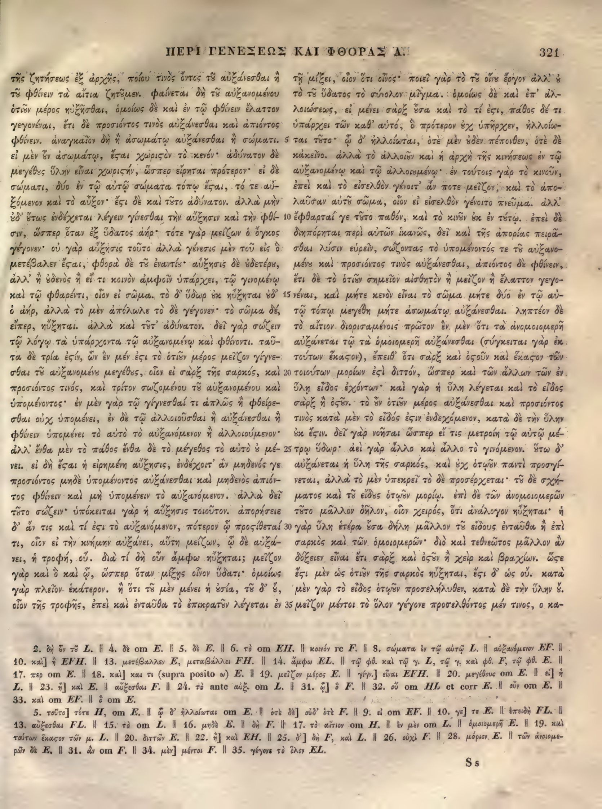

321a
| 1 | τῆς ζητήσεως ἐξ ἀρχῆς, ποίου τινὸς ὄντος τοῦ αὐξάνεσθαι ἢ | 0.90 |
|---|---|---|
| 2 | τοῦ φθίνειν τὰ αἴτια ζητοῦμεν. φαίνεται δὴ τοῦ αὐξανομένου τὸ | 0.90 |
| 3 | ὁτιοῦν μέρος ηὐξῆσθαι, ὁμοίως δὲ καὶ ἐν τῷ φθίνειν ἔλαττον | 0.90 |
| 4 | γεγονέναι, ἔτι δὲ <choice resp="#Mugler1966"><sic>προσόντος</sic><corr>προσιόντος</corr></choice> τινὸς αὐξάνεσθαι καὶ ἀπιόντος | 0.90 |
| 5 | φθίνειν. ἀναγκαῖον δὴ ἢ <choice resp="#Mugler1966"><sic>ἀσώματον</sic><corr>ἀσωμάτῳ</corr></choice> αὐξάνεσθαι ἢ σώματι. | 0.90 |
| 6 | εἰ μὲν οὖν <choice resp="#Mugler1966"><sic>ἀσώματον</sic><corr>ἀσωμάτῳ</corr></choice>, <choice resp="#hathiTrustOCR"><sic>ἔςαι</sic><corr>ἔσται</corr></choice> χωριστὸν τὸ κενόν· ἀδύνατον δέ· | 0.90 |
| 7 | <choice resp="#Mugler1966"><sic>μέγεθος</sic><corr>μεγέθους</corr></choice> ὕλην εἶναι <choice resp="#hathiTrustOCR"><sic>χωριςήν</sic><corr>χωριστήν</corr></choice>, ὥσπερ εἴρηται πρότερον· εἰ δὲ | 0.90 |
| 8 | σώματι, δύο ἐν τῷ αὐτῷ σώματα τόπῳ <choice resp="#hathiTrustOCR"><sic>ἔςαι</sic><corr>ἔσται</corr></choice>, τό τε αὐ- | 0.90 |
| 9 | ξόμενον καὶ τὸ αὖξον. <choice resp="#hathiTrustOCR"><sic>ἔςι</sic><corr>ἔστι</corr></choice> δὲ καὶ τοῦτο ἀδύνατον. ἀλλὰ μὴν | 0.90 |
| 10 | οὐδ' οὕτως ἐνδέχεται λέγειν γίνεσθαι τὴν αὔξησιν <choice resp="#Mugler1966"><sic>καὶ</sic><corr>ἢ</corr></choice> τὴν φθί- | 0.90 |
| 11 | σιν, ὥσπερ ὅταν ἐξ ὕδατος ἀήρ· τότε γὰρ μείζων ὁ ὄγκος | 0.90 |
| 12 | γέγονεν· οὐ γὰρ αὔξησις τοῦτο ἀλλὰ γένεσις μὲν τοῦ εἰς ὃ | 0.90 |
| 13 | <choice resp="#Mugler1966"><sic>μετέβαλεν</sic><corr>μεταβάλλει</corr></choice> <choice resp="#hathiTrustOCR"><sic>ἔςαι</sic><corr>ἔσται</corr></choice>, φθορὰ δὲ τοῦ ἐναντίον· αὐξήσεις δὲ <choice resp="#Mugler1966"><sic>οὐδέτεραι</sic><corr>οὐδετέρου</corr></choice>, | 0.90 |
| 14 | ἀλλ' ἢ οὐδενὸς ἢ εἴ τι κοινὸν ἀμφοῖν ὑπάρχει, τῷ γινομένῳ | 0.90 |
| 15 | καὶ τῷ φθαρέντι, οἷον εἰ σῶμα. τὸ δ' ὕδωρ ἐκ πυρὸς οὐδ' | 0.90 |
| 16 | ὁ ἀήρ, ἀλλὰ τὸ μὲν ἀπόλωλε τὸ δὲ γέγονεν· τὸ σῶμα δέ, | 0.90 |
| 17 | εἴπερ, ηὔξηται. ἀλλὰ καὶ τοῦτ' ἀδύνατον. δεῖ γὰρ σῴζειν | 0.90 |
| 18 | τῷ λόγῳ τὰ ὑπάρχοντα τῷ αὐξανομένῳ καὶ φθίνοντι. ταῦ- | 0.90 |
| 19 | τα δὲ τρία ἐστίν, ὧν ἓν μέν ἐστι τὸ ὁτιοῦν μέρος μεῖζον γίγνε- | 0.90 |
| 20 | σθαι τοῦ αὐξανομένου μεγέθους, οἷον εἰ σὰρξ τῆς σαρκός, καὶ | 0.90 |
| 21 | προσιόντος τινός, καὶ τρίτον σῳζομένου τοῦ αὐξανομένου καὶ | 0.90 |
| 22 | ὑπομένοντος· ἐν μὲν γὰρ τῷ <choice resp="#Mugler1966"><sic>γίγνεσθαί</sic><corr>γίνεσθαί</corr></choice> τι ἁπλῶς ἢ φθείρε- | 0.90 |
| 23 | σθαι οὐχ ὑπομένει, ἐν δὲ τῷ ἀλλοιοῦσθαι ἢ αὐξάνεσθαι ἢ | 0.90 |
| 24 | φθίνειν ὑπομένει τὸ αὐτὸ τὸ αὐξανόμενον <choice resp="#Mugler1966"><sic>ἢ</sic><corr>καὶ</corr></choice> ἀλλοιούμενον. | 0.90 |
| 25 | ἀλλ' ἔνθα μὲν τὸ πάθος ἔνθα δὲ τὸ μέγεθος τὸ αὐτὸ ὑπομέ- | 0.90 |
| 26 | νει. εἰ δὴ ἔσται ἡ εἰρημένη αὔξησις, ἐνδέχοιτ' ἂν μηδενὸς γε | 0.90 |
| 27 | προσιόντος μηδὲ ὑπομένοντος αὐξάνεσθαι καὶ μηδενὸς ἀπιό- | 0.90 |
| 28 | ντος φθίνειν καὶ μὴ <choice resp="#Mugler1966"><sic>ὑπομένοντος</sic><corr>ὑπομένειν</corr></choice> τὸ αὐξανόμενον. ἀλλὰ δεῖ | 0.90 |
| 29 | τοῦτο σῴζειν· ὑπόκειται γὰρ ἡ αὔξησις τοιοῦτον. ἀπορήσειε | 0.90 |
| 30 | δ' ἄν τις καὶ τί ἐστι τὸ αὐξανόμενον, πότερον ᾧ <choice resp="#Mugler1966"><sic>προσθέτει</sic><corr>προστίθεταί</corr></choice> | 0.90 |
| 31 | τι, οἷον εἰ τὴν κνήμην <choice resp="#Mugler1966"><sic>αὔξει</sic><corr>αὐξάνει</corr></choice>, αὕτη μείζων, ᾧ δὲ αὔξε- | 0.90 |
| 32 | ται, ἡ τροφή, οὔ. διὰ τί δὴ οὖν ἄμφω ηὔξηται; <choice resp="#Mugler1966"><sic>μείζων</sic><corr>μεῖζον</corr></choice> | 0.90 |
| 33 | γὰρ καὶ ὃ καὶ ᾧ, ὥσπερ ὅταν <choice resp="#Mugler1966"><sic>μείξῃς</sic><corr>μίξῃς</corr></choice> οἶνον ὕδατι· ὁμοίως | 0.90 |
| 34 | γὰρ πλεῖον ἑκάτερον. ἢ ὅτι <choice resp="#Mugler1966"><sic>τὸ</sic><corr>τοῦ</corr></choice> μὲν μένει ἡ οὐσία, <choice resp="#Mugler1966"><sic>τὸ</sic><corr>τοῦ</corr></choice> δ' οὔ, | 0.90 |
| 35 | οἷον τῆς τροφῆς, ἐπεὶ καὶ ἐνταῦθα τὸ ἐπικρατοῦν λέγεται ἐν | 0.90 |
321b
| 1 | τῇ μίξει, οἷον ὅτι οἶνος· ποιεῖ γὰρ τὸ τῦ οἶν ἔργον ἀλλ’ <choice resp="#Mugler1966"><sic>ὁ</sic><corr>οὐ</corr></choice> | 0.85 |
|---|---|---|
| 2 | τὸ <choice resp="#Mugler1966"><sic>τῦ</sic><corr>τοῦ</corr></choice> ὕδατος τὸ σύνολον μίγμα. ὁμοίως δὲ καὶ ἐπ’ ἀλ- | 0.85 |
| 3 | λοιώσεως, εἰ μένει σαρξ <choice resp="#Mugler1966"><sic>ὅσα</sic><corr>οὖσα</corr></choice> καὶ τὸ τί ἐστι, πάθος δέ τι | 0.85 |
| 4 | ὑπάρχει τῶν καθ’ αὑτό, ὃ πρότερον οὐχ ὑπῆρχεν, ἠλλοίω- | 0.85 |
| 5 | ται τοῦτο· ᾧ δ’ ἠλλοίωται, ὅτε μὲν οὐδὲν πέπονθεν, ὅτε δὲ | 0.85 |
| 6 | κἀκεῖνο. ἀλλὰ τὸ ἀλλοιοῦν καὶ ἡ ἀρχὴ τῆς κινήσεως ἐν τῷ | 0.85 |
| 7 | αὐξανομένῳ καὶ τῷ ἀλλοιουμένῳ· ἐν τούτοις γὰρ τὸ κινοῦν, | 0.85 |
| 8 | ἐπεὶ καὶ τὸ εἰσελθὸν γένοιτ’ ἄν ποτε μεῖζον, καὶ τὸ ἀπο- | 0.85 |
| 9 | λαῦσαν <choice resp="#Mugler1966"><sic>αὐτὸ</sic><corr>αὐτοῦ</corr></choice> σῶμα, οἷον εἰ εἰσελθὸν γένοιτο πνεῦμα. ἀλλ’ | 0.85 |
| 10 | ἔφθαρταί γε τοῦτο παθόν, καὶ τὸ <choice resp="#Mugler1966"><sic>κινῆν</sic><corr>κινοῦν</corr></choice> οὐκ ἐν τούτῳ. ἐπεὶ δὲ | 0.85 |
| 11 | διηπόρηται περὶ αὐτῶν ἱκανῶς, δεῖ καὶ τῆς ἀπορίας πειρᾶ- | 0.85 |
| 12 | σθαι λύσιν εὑρεῖν, σῴζοντας τὸ ὑπομένοντός τε <choice resp="#Mugler1966"><sic>τὸ</sic><corr>τοῦ</corr></choice> αὐξανο- | 0.85 |
| 13 | μένῳ καὶ <choice resp="#Mugler1966"><sic>προσόντος</sic><corr>προσιόντος</corr></choice> τινὸς αὐξάνεσθαι, ἀπιόντος δὲ φθίνειν, | 0.85 |
| 14 | ἔτι δὲ τὸ ὁτιοῦν σημεῖον αἰσθητὸν ἢ μεῖζον ἢ ἔλαττον γεγο- | 0.85 |
| 15 | νέναι, καὶ μήτε κενὸν εἶναι τὸ σῶμα μήτε δύο ἐν τῷ αὐ- | 0.85 |
| 16 | τῷ τόπῳ μεγέθη μήτε <choice resp="#Mugler1966"><sic>ἀσώματον</sic><corr>ἀσωμάτῳ</corr></choice> αὐξάνεσθαι. ληπτέον δὲ | 0.85 |
| 17 | τὸ αἴτιον <choice resp="#Mugler1966"><sic>διορισταμένοις</sic><corr>διορισαμένοις</corr></choice> πρῶτον ἐν μὲν ὅτι τὰ ἀνομοιομερῆ | 0.85 |
| 18 | αὐξάνεται τῷ τὰ ὁμοιομερῆ αὐξάνεσθαι (σύγκειται γὰρ ἐκ | 0.85 |
| 19 | τούτων ἕκαστον), <choice resp="#Mugler1966"><sic>ἐπειδὴ</sic><corr>ἔπειθ</corr></choice> ὅτι σαρξ καὶ <choice resp="#hathiTrustOCR"><sic>ὀςοῦν</sic><corr>ὀστοῦν</corr></choice> καὶ ἕκαστον τῶν | 0.85 |
| 20 | τοιούτων μορίων <choice resp="#hathiTrustOCR"><sic>ἐςὶ</sic><corr>ἐστὶ</corr></choice> διττόν, ὥσπερ καὶ τῶν ἄλλων τῶν ἐν | 0.85 |
| 21 | ὕλῃ εἶδος ἐχόντων· καὶ γὰρ ἡ ὕλη λέγεται καὶ τὸ εἶδος | 0.85 |
| 22 | σαρξ ἢ ὀστοῦν. τὸ <choice resp="#Mugler1966"><sic>δὴ</sic><corr>οὖν</corr></choice> ὁτιοῦν μέρος αὐξάνεσθαι καὶ <choice resp="#Mugler1966"><sic>προσόντος</sic><corr>προσιόντος</corr></choice> | 0.85 |
| 23 | τινὸς κατὰ μὲν τὸ εἶδός <choice resp="#hathiTrustOCR"><sic>ἐςιν</sic><corr>ἐστιν</corr></choice> ἐνδεχόμενον, κατὰ δὲ τὴν ὕλην | 0.85 |
| 24 | οὐκ <choice resp="#hathiTrustOCR"><sic>ἔςιν</sic><corr>ἔστιν</corr></choice>. δεῖ γὰρ νοῆσαι ὥσπερ εἴ τις μετροίη τῷ αὐτῷ μέ- | 0.85 |
| 25 | τρῳ ὕδωρ· ἀεὶ γὰρ ἄλλο καὶ ἄλλο τὸ γινόμενον. οὕτω δ’ | 0.85 |
| 26 | αὐξάνεται ἡ ὕλη τῆς σαρκός, καὶ οὐχ <choice resp="#Mugler1966"><sic>ὁτιοῦν</sic><corr>ὁτῳοῦν</corr></choice> παντὶ προσγί- | 0.85 |
| 27 | νεται, ἀλλὰ τὸ μὲν ὑπεκρεῖ τὸ δὲ προσέρχεται· <choice resp="#Mugler1966"><sic>τῷ</sic><corr>τοῦ</corr></choice> δὲ σχή- | 0.85 |
| 28 | ματος καὶ <choice resp="#Mugler1966"><sic>τὸ</sic><corr>τοῦ</corr></choice> <choice resp="#Mugler1966"><sic>εἶδος</sic><corr>εἴδους</corr></choice> ὁτιοῦν μορίῳ. ἐπὶ δὲ τῶν ἀνομοιομερῶν | 0.85 |
| 29 | τοῦτο μᾶλλον δῆλον, οἷον χειρός, ὅτι ἀνάλογον ηὔξηται· ἡ | 0.85 |
| 30 | γὰρ ὕλη ἑτέρα <choice resp="#Mugler1966"><sic>ὅσα</sic><corr>οὖσα</corr></choice> δήλη μᾶλλον <choice resp="#Mugler1966"><sic>τὸ</sic><corr>τοῦ</corr></choice> εἴδους ἐνταῦθα ἢ ἐπὶ | 0.85 |
| 31 | σαρκὸς καὶ τῶν ὁμοιομερῶν· διὸ καὶ τεθνεῶτος μᾶλλον ἂν | 0.85 |
| 32 | δόξειεν εἶναι ἔτι σαρξ καὶ ὀστοῦν ἢ χεὶρ καὶ βραχίων. <choice resp="#hathiTrustOCR"><sic>ὥςε</sic><corr>ὥστε</corr></choice> | 0.85 |
| 33 | <choice resp="#hathiTrustOCR"><sic>ἔςι</sic><corr>ἔστι</corr></choice> μὲν ὡς ὁτιοῦν τῆς σαρκὸς ηὔξηται, <choice resp="#hathiTrustOCR"><sic>ἔςι</sic><corr>ἔστι</corr></choice> δ’ ὡς οὔ. κατὰ | 0.85 |
| 34 | μὲν γὰρ τὸ εἶδος <choice resp="#Mugler1966"><sic>ὁτιοῦν</sic><corr>ὁτῳοῦν</corr></choice> προσελήλυθεν, κατὰ δὲ τὴν ὕλην οὐ. | 0.85 |
| 35 | μείζον μέντοι τὸ ὅλον γέγονε προσελθόντος μέν τινος, ὁ κα- | 0.85 |
Textual apparatus
- n1 [both] 10. καὶ] ἡ EFH. ‖ 13. μετέβαλλεν E, μεταβάλλει FH. ‖ 14. ἀμφω EL. ‖ τῷ φθ. καὶ τῷ γ. L, τῷ γ. καὶ φθ. F, τῷ φθ. E. ‖ 17. περ om E. ‖ 18. καὶ] και τι (supra posito ω) E. ‖ 19. μεῖζον μέρος E. ‖ γίγν.] εἶναι EFH. ‖ 20. μεγέθους om E. ‖ εἰ] ἡ L. ‖ 23. ᾗ] καὶ E. ‖ αὔξεσθαι F. ‖ 24. τὸ ante αὔξ. om L. ‖ 31. ᾧ] ὃ F. ‖ 32. οὗ om HL et corr E. ‖ οὖν om E. ‖ 33. καὶ om EF. ‖ ὃ om E.
- n2 [both] 5. τοῦτο] τότε H, om E. ‖ ὧ δ’ ἠλλοίωται om E. ‖ ὁτὲ δὲ] οὐδ’ ὁτὲ F. ‖ 9. εἰ om EF. ‖ 10. γε] τε E. ‖ ἐπειδὴ FL. ‖ 13. αὔξεσθαι FL. ‖ 15. τὸ om L. ‖ 16. μηδὲ E. ‖ δὴ F. ‖ 17. τὸ αἴτιον om H. ‖ ἐν μὲν om L. ‖ ὁμοιομερῆ E. ‖ 19. καὶ τούτων ἕκαστον τῶν μ. L. ‖ 20. διττῶν E. ‖ 22. ᾗ] καὶ EH. ‖ 25. δ’] δὴ F, καὶ L. ‖ 26. οὐχὶ F. ‖ 28. μόριον E. ‖ τῶν ἀνοιομερῶν δὲ E. ‖ 31. ἂν om F. ‖ 34. μὲν] μέντοι F. ‖ 35. γέγονε τὸ ὅλον EL.
Verifier issues
- warning 321b2: possible gutter-copy artifact; column A ends and column B begins with
τὸ.
All Greek-word differences from Mugler 1966 (84)
This inventory is exhaustive at the Greek-word level; it does not imply that either reading is an error.
- orthographic_or_diacritic 321a2: φαίνεται ↔ Φαίνεται (anchors: ζητοῦμεν … δὴ)
- delete 321a2: τὸ ↔ ∅ (anchors: αὐξανομένου … ὁτιοῦν)
- replace 321a4: προσόντος ↔ προσιόντος (anchors: δὲ … τινὸς)
- orthographic_or_diacritic 321a5: ἀναγκαῖον ↔ Ἀναγκαῖον (anchors: φθίνειν … δὴ)
- replace 321a5: ἀσώματον ↔ ἀσωμάτῳ (anchors: ἢ … αὐξάνεσθαι)
- replace 321a6: ἀσώματον ↔ ἀσωμάτῳ (anchors: οὖν … ἔσται)
- orthographic_or_diacritic 321a6: δέ ↔ δὲ (anchors: ἀδύνατον … μέγεθος)
- replace 321a7: μέγεθος ↔ μεγέθους (anchors: δέ … ὕλην)
- orthographic_or_diacritic 321a7: εἰ ↔ Εἰ (anchors: πρότερον … δὲ)
- orthographic_or_diacritic 321a9: ἀλλὰ ↔ Ἀλλὰ (anchors: ἀδύνατον … μὴν)
- replace 321a10: καὶ ↔ ἢ (anchors: αὔξησιν … τὴν)
- replace 321a13: μετέβαλεν ↔ μεταβάλλει (anchors: ὃ … ἔσται)
- replace 321a13: ἐναντίον αὐξήσεις ↔ ἐναντίου αὔξησις (anchors: τοῦ … δὲ)
- replace 321a13: οὐδέτεραι ↔ οὐδετέρου (anchors: δὲ … ἀλλ)
- orthographic_or_diacritic 321a15: τὸ ↔ Τὸ (anchors: σῶμα … δ)
- replace 321a15: ἐκ πυρὸς ↔ οὐκ ηὔξηται (anchors: ὕδωρ … οὐδ)
- orthographic_or_diacritic 321a17: ἀλλὰ ↔ Ἀλλὰ (anchors: ηὔξηται … καὶ)
- orthographic_or_diacritic 321a17: σῴζειν ↔ σώζειν (anchors: γὰρ … τῷ)
- orthographic_or_diacritic 321a18: ταῦτα ↔ Ταῦτα (anchors: φθίνοντι … δὲ)
- replace 321a19: γίγνεσθαι ↔ γίνεσθαι (anchors: μεῖζον … τοῦ)
- orthographic_or_diacritic 321a21: σῳζομένου ↔ σωζομένου (anchors: τρίτον … τοῦ)
- replace 321a22: γίγνεσθαί ↔ γίνεσθαί (anchors: τῷ … τι)
- replace 321a24: ἢ ↔ καὶ (anchors: αὐξανόμενον … ἀλλοιούμενον)
- orthographic_or_diacritic 321a25: ἀλλ ↔ Ἀλλ (anchors: ἀλλοιούμενον … ἔνθα)
- replace 321a25: ὑπομένει ↔ οὐ μένει (anchors: αὐτὸ … εἰ)
- orthographic_or_diacritic 321a26: εἰ ↔ Εἰ (anchors: ὑπομένει … δὴ)
- orthographic_or_diacritic 321a26: μηδενὸς ↔ μηδενός (anchors: ἂν … γε)
- replace 321a28: ὑπομένοντος ↔ ὑπομένειν (anchors: μὴ … τὸ)
- orthographic_or_diacritic 321a28: ἀλλὰ ↔ Ἀλλὰ (anchors: αὐξανόμενον … δεῖ)
- orthographic_or_diacritic 321a29: σῴζειν ↔ σώζειν (anchors: τοῦτο … ὑπόκειται)
- orthographic_or_diacritic 321a29: ἀπορήσειε ↔ Ἀπορήσειε (anchors: τοιοῦτον … δ)
- replace 321a30: προσθέτει ↔ προστίθεταί (anchors: ᾧ … τι)
- replace 321a31: αὔξει ↔ αὐξάνει (anchors: κνήμην … αὕτη)
- replace 321a31: αὔξεται ↔ αὐξάνει (anchors: δὲ … ἡ)
- orthographic_or_diacritic 321a32: διὰ ↔ Διὰ (anchors: οὔ … τί)
- insert 321a32: ∅ ↔ οὐκ (anchors: οὖν … ἄμφω)
- replace 321a32: μείζων ↔ μεῖζον (anchors: ηὔξηται … γὰρ)
- replace 321a33: μείξῃς ↔ μίξῃς (anchors: ὅταν … οἶνον)
- orthographic_or_diacritic 321a34: ἢ ↔ Ἢ (anchors: ἑκάτερον … ὅτι)
- replace 321a34: τὸ ↔ τοῦ (anchors: ὅτι … μὲν)
- replace 321a34: τὸ ↔ τοῦ (anchors: οὐσία … δ)
- replace 321b1: τῦ οἶν ↔ τοῦ οἴνου (anchors: τὸ … ἔργον)
- replace 321b1: ὁ ↔ οὐ (anchors: ἀλλ … τὸ)
- replace 321b2: τῦ ↔ τοῦ (anchors: τὸ … ὕδατος)
- orthographic_or_diacritic 321b2: σύνολον ↔ συνόλον (anchors: τὸ … μίγμα)
- orthographic_or_diacritic 321b2: ὁμοίως ↔ Ὁμοίως (anchors: μίγμα … δὲ)
- orthographic_or_diacritic 321b3: σαρξ ↔ σὰρξ (anchors: μένει … ὅσα)
- replace 321b3: ὅσα ↔ οὖσα (anchors: σαρξ … καὶ)
- orthographic_or_diacritic 321b5: ὅτε ↔ ὁτὲ (anchors: ἠλλοίωται … μὲν)
- orthographic_or_diacritic 321b5: ὅτε ↔ ὁτὲ (anchors: πέπονθεν … δὲ)
- orthographic_or_diacritic 321b6: ἀλλὰ ↔ Ἀλλὰ (anchors: κἀκεῖνο … τὸ)
- replace 321b9: αὐτὸ ↔ αὐτοῦ (anchors: ἀπολαῦσαν … σῶμα)
- orthographic_or_diacritic 321b9: ἀλλ ↔ Ἀλλ (anchors: πνεῦμα … ἔφθαρταί)
- replace 321b10: κινῆν ↔ κινοῦν (anchors: τὸ … οὐκ)
- orthographic_or_diacritic 321b10: ἐπεὶ ↔ Ἐπεὶ (anchors: τούτῳ … δὲ)
- orthographic_or_diacritic 321b12: σῴζοντας ↔ σώζοντας (anchors: εὑρεῖν … τὸ)
- replace 321b12: τὸ αὐξανομένῳ ↔ τοῦ αὐξανομένου (anchors: τε … καὶ)
- replace 321b13: προσόντος ↔ προσιόντος (anchors: καὶ … τινὸς)
- replace 321b16: ἀσώματον ↔ ἀσωμάτῳ (anchors: μήτε … αὐξάνεσθαι)
- orthographic_or_diacritic 321b16: ληπτέον ↔ Ληπτέον (anchors: αὐξάνεσθαι … δὲ)
- replace 321b17: διορισταμένοις ↔ διορισαμένοις (anchors: αἴτιον … πρῶτον)
- orthographic_or_diacritic 321b17: ἐν ↔ ἓν (anchors: πρῶτον … μὲν)
- replace 321b19: ἐπειδὴ ↔ ἔπειθ (anchors: ἕκαστον … ὅτι)
- orthographic_or_diacritic 321b19: σαρξ ↔ σὰρξ (anchors: ὅτι … καὶ)
- orthographic_or_diacritic 321b22: σαρξ ↔ σὰρξ (anchors: εἶδος … ἢ)
- orthographic_or_diacritic 321b22: τὸ ↔ Τὸ (anchors: ὀστοῦν … δὴ)
- replace 321b22: δὴ ↔ οὖν (anchors: τὸ … ὁτιοῦν)
- replace 321b22: προσόντος ↔ προσιόντος (anchors: καὶ … τινὸς)
- orthographic_or_diacritic 321b25: οὕτω ↔ Οὕτω (anchors: γινόμενον … δ)
- replace 321b26: ὁτιοῦν ↔ ὁτῳοῦν (anchors: οὐχ … παντὶ)
- replace 321b27: τῷ ↔ τοῦ (anchors: προσέρχεται … δὲ)
- replace 321b28: τὸ εἶδος ὁτιοῦν ↔ τοῦ εἴδους ὁτῳοῦν (anchors: καὶ … μορίῳ)
- orthographic_or_diacritic 321b28: ἐπὶ ↔ Ἐπὶ (anchors: μορίῳ … δὲ)
- replace 321b30: ὅσα ↔ οὖσα (anchors: ἑτέρα … δήλη)
- replace 321b30: τὸ ↔ τοῦ (anchors: μᾶλλον … εἴδους)
- orthographic_or_diacritic 321b32: σαρξ ↔ σὰρξ (anchors: ἔτι … καὶ)
- orthographic_or_diacritic 321b32: χεὶρ ↔ χεῖρ (anchors: ἢ … καὶ)
- orthographic_or_diacritic 321b32: ὥστε ↔ Ὥστε (anchors: βραχίων … ἔστι)
- orthographic_or_diacritic 321b33: κατὰ ↔ Κατὰ (anchors: οὔ … μὲν)
- replace 321b34: ὁτιοῦν ↔ ὁτῳοῦν (anchors: εἶδος … προσελήλυθεν)
- orthographic_or_diacritic 321b34: οὐ ↔ οὔ (anchors: ὕλην … μείζον)
- orthographic_or_diacritic 321b35: μείζον ↔ Μεῖζον (anchors: οὐ … μέντοι)
- orthographic_or_diacritic 321b35: ὁ ↔ ὃ (anchors: τινος … κα)
- replace 321b35: κα λεῖται ↔ καλεῖται (anchors: ὁ … τροφὴ)
Encoded TEI choices (47)
- a6
#hathiTrustOCR: <choice resp="#hathiTrustOCR"><sic>ἔςαι</sic><corr>ἔσται</corr></choice> (1.00) — Aligned Hathi στ-ligature OCR correction: deterministic repair of the Hathi internal final sigma agrees with the scan and reference crop. - a7
#hathiTrustOCR: <choice resp="#hathiTrustOCR"><sic>χωριςήν</sic><corr>χωριστήν</corr></choice> (1.00) — Aligned Hathi στ-ligature OCR correction: deterministic repair of the Hathi internal final sigma agrees with the scan and reference crop. - a8
#hathiTrustOCR: <choice resp="#hathiTrustOCR"><sic>ἔςαι</sic><corr>ἔσται</corr></choice> (1.00) — Aligned Hathi στ-ligature OCR correction: deterministic repair of the Hathi internal final sigma agrees with the scan and reference crop. - a9
#hathiTrustOCR: <choice resp="#hathiTrustOCR"><sic>ἔςι</sic><corr>ἔστι</corr></choice> (1.00) — Aligned Hathi στ-ligature OCR correction: deterministic repair of the Hathi internal final sigma agrees with the scan and reference crop. - a13
#hathiTrustOCR: <choice resp="#hathiTrustOCR"><sic>ἔςαι</sic><corr>ἔσται</corr></choice> (1.00) — Aligned Hathi στ-ligature OCR correction: deterministic repair of the Hathi internal final sigma agrees with the scan and reference crop. - b19
#hathiTrustOCR: <choice resp="#hathiTrustOCR"><sic>ὀςοῦν</sic><corr>ὀστοῦν</corr></choice> (1.00) — Aligned Hathi στ-ligature OCR correction: deterministic repair of the Hathi internal final sigma agrees with the scan and reference crop. - b20
#hathiTrustOCR: <choice resp="#hathiTrustOCR"><sic>ἐςὶ</sic><corr>ἐστὶ</corr></choice> (1.00) — Aligned Hathi στ-ligature OCR correction: deterministic repair of the Hathi internal final sigma agrees with the scan and reference crop. - b23
#hathiTrustOCR: <choice resp="#hathiTrustOCR"><sic>ἐςιν</sic><corr>ἐστιν</corr></choice> (1.00) — Aligned Hathi στ-ligature OCR correction: deterministic repair of the Hathi internal final sigma agrees with the scan and reference crop. - b24
#hathiTrustOCR: <choice resp="#hathiTrustOCR"><sic>ἔςιν</sic><corr>ἔστιν</corr></choice> (1.00) — Aligned Hathi στ-ligature OCR correction: deterministic repair of the Hathi internal final sigma agrees with the scan and reference crop. - b32
#hathiTrustOCR: <choice resp="#hathiTrustOCR"><sic>ὥςε</sic><corr>ὥστε</corr></choice> (1.00) — Aligned Hathi στ-ligature OCR correction: deterministic repair of the Hathi internal final sigma agrees with the scan and reference crop. - b33
#hathiTrustOCR: <choice resp="#hathiTrustOCR"><sic>ἔςι</sic><corr>ἔστι</corr></choice> (1.00) — Aligned Hathi στ-ligature OCR correction: deterministic repair of the Hathi internal final sigma agrees with the scan and reference crop. - b33
#hathiTrustOCR: <choice resp="#hathiTrustOCR"><sic>ἔςι</sic><corr>ἔστι</corr></choice> (1.00) — Aligned Hathi στ-ligature OCR correction: deterministic repair of the Hathi internal final sigma agrees with the scan and reference crop. - a7
#Mugler1966: <choice resp="#Mugler1966"><sic>μέγεθος</sic><corr>μεγέθους</corr></choice> (1.00) — Control-edition confirmation of the compact Berlin Bekker ου ligature; the OCR omitted upsilon and produced an impossible or contextually invalid Greek form. - a34
#Mugler1966: <choice resp="#Mugler1966"><sic>τὸ</sic><corr>τοῦ</corr></choice> (1.00) — Control-edition confirmation of the compact Berlin Bekker ου ligature; the OCR omitted upsilon and produced an impossible or contextually invalid Greek form. - a34
#Mugler1966: <choice resp="#Mugler1966"><sic>τὸ</sic><corr>τοῦ</corr></choice> (1.00) — Control-edition confirmation of the compact Berlin Bekker ου ligature; the OCR omitted upsilon and produced an impossible or contextually invalid Greek form. - b1
#Mugler1966: <choice resp="#Mugler1966"><sic>ὁ</sic><corr>οὐ</corr></choice> (1.00) — Control-edition confirmation of the compact Berlin Bekker ου ligature; the OCR omitted upsilon and produced an impossible or contextually invalid Greek form. - b3
#Mugler1966: <choice resp="#Mugler1966"><sic>ὅσα</sic><corr>οὖσα</corr></choice> (1.00) — Control-edition confirmation of the compact Berlin Bekker ου ligature; the OCR omitted upsilon and produced an impossible or contextually invalid Greek form. - b9
#Mugler1966: <choice resp="#Mugler1966"><sic>αὐτὸ</sic><corr>αὐτοῦ</corr></choice> (1.00) — Control-edition confirmation of the compact Berlin Bekker ου ligature; the OCR omitted upsilon and produced an impossible or contextually invalid Greek form. - b12
#Mugler1966: <choice resp="#Mugler1966"><sic>τὸ</sic><corr>τοῦ</corr></choice> (1.00) — Control-edition confirmation of the compact Berlin Bekker ου ligature; the OCR omitted upsilon and produced an impossible or contextually invalid Greek form. - b27
#Mugler1966: <choice resp="#Mugler1966"><sic>τῷ</sic><corr>τοῦ</corr></choice> (1.00) — Control-edition confirmation of the compact Berlin Bekker ου ligature; the OCR omitted upsilon and produced an impossible or contextually invalid Greek form. - b28
#Mugler1966: <choice resp="#Mugler1966"><sic>τὸ</sic><corr>τοῦ</corr></choice> (1.00) — Control-edition confirmation of the compact Berlin Bekker ου ligature; the OCR omitted upsilon and produced an impossible or contextually invalid Greek form. - b28
#Mugler1966: <choice resp="#Mugler1966"><sic>εἶδος</sic><corr>εἴδους</corr></choice> (1.00) — Control-edition confirmation of the compact Berlin Bekker ου ligature; the OCR omitted upsilon and produced an impossible or contextually invalid Greek form. - b30
#Mugler1966: <choice resp="#Mugler1966"><sic>ὅσα</sic><corr>οὖσα</corr></choice> (1.00) — Control-edition confirmation of the compact Berlin Bekker ου ligature; the OCR omitted upsilon and produced an impossible or contextually invalid Greek form. - b30
#Mugler1966: <choice resp="#Mugler1966"><sic>τὸ</sic><corr>τοῦ</corr></choice> (1.00) — Control-edition confirmation of the compact Berlin Bekker ου ligature; the OCR omitted upsilon and produced an impossible or contextually invalid Greek form. - a4
#Mugler1966: <choice resp="#Mugler1966"><sic>προσόντος</sic><corr>προσιόντος</corr></choice> (0.90) — Plausible one-token difference in the globally aligned Mugler 1966; surrounding token sequence is stable. - a5
#Mugler1966: <choice resp="#Mugler1966"><sic>ἀσώματον</sic><corr>ἀσωμάτῳ</corr></choice> (0.90) — Plausible one-token difference in the globally aligned Mugler 1966; surrounding token sequence is stable. - a6
#Mugler1966: <choice resp="#Mugler1966"><sic>ἀσώματον</sic><corr>ἀσωμάτῳ</corr></choice> (0.90) — Plausible one-token difference in the globally aligned Mugler 1966; surrounding token sequence is stable. - a10
#Mugler1966: <choice resp="#Mugler1966"><sic>καὶ</sic><corr>ἢ</corr></choice> (0.90) — Plausible one-token difference in the globally aligned Mugler 1966; surrounding token sequence is stable. - a13
#Mugler1966: <choice resp="#Mugler1966"><sic>μετέβαλεν</sic><corr>μεταβάλλει</corr></choice> (0.90) — Plausible one-token difference in the globally aligned Mugler 1966; surrounding token sequence is stable. - a13
#Mugler1966: <choice resp="#Mugler1966"><sic>οὐδέτεραι</sic><corr>οὐδετέρου</corr></choice> (0.90) — Plausible one-token difference in the globally aligned Mugler 1966; surrounding token sequence is stable. - a22
#Mugler1966: <choice resp="#Mugler1966"><sic>γίγνεσθαί</sic><corr>γίνεσθαί</corr></choice> (0.90) — Plausible one-token difference in the globally aligned Mugler 1966; surrounding token sequence is stable. - a24
#Mugler1966: <choice resp="#Mugler1966"><sic>ἢ</sic><corr>καὶ</corr></choice> (0.90) — Plausible one-token difference in the globally aligned Mugler 1966; surrounding token sequence is stable. - a28
#Mugler1966: <choice resp="#Mugler1966"><sic>ὑπομένοντος</sic><corr>ὑπομένειν</corr></choice> (0.90) — Plausible one-token difference in the globally aligned Mugler 1966; surrounding token sequence is stable. - a30
#Mugler1966: <choice resp="#Mugler1966"><sic>προσθέτει</sic><corr>προστίθεταί</corr></choice> (0.90) — Plausible one-token difference in the globally aligned Mugler 1966; surrounding token sequence is stable. - a31
#Mugler1966: <choice resp="#Mugler1966"><sic>αὔξει</sic><corr>αὐξάνει</corr></choice> (0.90) — Plausible one-token difference in the globally aligned Mugler 1966; surrounding token sequence is stable. - a32
#Mugler1966: <choice resp="#Mugler1966"><sic>μείζων</sic><corr>μεῖζον</corr></choice> (0.90) — Plausible one-token difference in the globally aligned Mugler 1966; surrounding token sequence is stable. - a33
#Mugler1966: <choice resp="#Mugler1966"><sic>μείξῃς</sic><corr>μίξῃς</corr></choice> (0.90) — Plausible one-token difference in the globally aligned Mugler 1966; surrounding token sequence is stable. - b2
#Mugler1966: <choice resp="#Mugler1966"><sic>τῦ</sic><corr>τοῦ</corr></choice> (0.90) — Plausible one-token difference in the globally aligned Mugler 1966; surrounding token sequence is stable. - b10
#Mugler1966: <choice resp="#Mugler1966"><sic>κινῆν</sic><corr>κινοῦν</corr></choice> (0.90) — Plausible one-token difference in the globally aligned Mugler 1966; surrounding token sequence is stable. - b13
#Mugler1966: <choice resp="#Mugler1966"><sic>προσόντος</sic><corr>προσιόντος</corr></choice> (0.90) — Plausible one-token difference in the globally aligned Mugler 1966; surrounding token sequence is stable. - b16
#Mugler1966: <choice resp="#Mugler1966"><sic>ἀσώματον</sic><corr>ἀσωμάτῳ</corr></choice> (0.90) — Plausible one-token difference in the globally aligned Mugler 1966; surrounding token sequence is stable. - b17
#Mugler1966: <choice resp="#Mugler1966"><sic>διορισταμένοις</sic><corr>διορισαμένοις</corr></choice> (0.90) — Plausible one-token difference in the globally aligned Mugler 1966; surrounding token sequence is stable. - b19
#Mugler1966: <choice resp="#Mugler1966"><sic>ἐπειδὴ</sic><corr>ἔπειθ</corr></choice> (0.90) — Plausible one-token difference in the globally aligned Mugler 1966; surrounding token sequence is stable. - b22
#Mugler1966: <choice resp="#Mugler1966"><sic>δὴ</sic><corr>οὖν</corr></choice> (0.90) — Plausible one-token difference in the globally aligned Mugler 1966; surrounding token sequence is stable. - b22
#Mugler1966: <choice resp="#Mugler1966"><sic>προσόντος</sic><corr>προσιόντος</corr></choice> (0.90) — Plausible one-token difference in the globally aligned Mugler 1966; surrounding token sequence is stable. - b26
#Mugler1966: <choice resp="#Mugler1966"><sic>ὁτιοῦν</sic><corr>ὁτῳοῦν</corr></choice> (0.90) — Plausible one-token difference in the globally aligned Mugler 1966; surrounding token sequence is stable. - b34
#Mugler1966: <choice resp="#Mugler1966"><sic>ὁτιοῦν</sic><corr>ὁτῳοῦν</corr></choice> (0.90) — Plausible one-token difference in the globally aligned Mugler 1966; surrounding token sequence is stable.
Unmatched Hathi OCR words (138)
Compared after στ/ου normalization and scan-attested line-end dehyphenation. OCR line numbers refer to the Hathi text file.
| Normalized | Raw OCR | OCR line | Context |
|---|---|---|---|
| περι | περι | 1 | ΠΕΡΙ ΓΕΝΕΣΕΩΣ ΚΑΙ ΦΘΟΡΑΣ Α. ⏎ 321 |
| γενεσεως | γενεσεως | 1 | ΠΕΡΙ ΓΕΝΕΣΕΩΣ ΚΑΙ ΦΘΟΡΑΣ Α. ⏎ 321 |
| φθορας | φθορας | 1 | ΠΕΡΙ ΓΕΝΕΣΕΩΣ ΚΑΙ ΦΘΟΡΑΣ Α. ⏎ 321 |
| α | α | 1 | ΠΕΡΙ ΓΕΝΕΣΕΩΣ ΚΑΙ ΦΘΟΡΑΣ Α. ⏎ 321 |
| σε | σε | 3 | 321 ⏎ σε ⏎ τῆς ζητήσεως ἐξ ἀρχῆς, ποίου τινὸς ὄντος τῇ αὐξάνεσθαι ἢ τῇ μίξει, οἷον ὅτι οἶνος· ποιεῖ γὰρ τὸ τῇ οἶν ἔργον ἀλλ' ἐ |
| το | το | 5 | τῆς ζητήσεως ἐξ ἀρχῆς, ποίου τινὸς ὄντος τῇ αὐξάνεσθαι ἢ τῇ μίξει, οἷον ὅτι οἶνος· ποιεῖ γὰρ τὸ τῇ οἶν ἔργον ἀλλ' ἐ ⏎ το φθίνειν τὰ αἴτια ζητῶμεν. φαίνεται δὴ τῇ αὐξανομένου τὸ τὸ ὕδατος τὸ σύνολον μίγμα. ὁμοίως δὲ καὶ ἐπ᾽ ἀλ ⏎ ὁτιν μέρος ηὐξῆσθαι, ὁμοίως δὲ καὶ ἐν τῷ φθίνειν ἔλαττον λοιώσεως, εἰ μένει σὰρξ ἔσα καὶ τὸ τί ἐςι, πάθος δέ τι |
| ἐπ᾽ | ἐπ᾽ | 5 | τῆς ζητήσεως ἐξ ἀρχῆς, ποίου τινὸς ὄντος τῇ αὐξάνεσθαι ἢ τῇ μίξει, οἷον ὅτι οἶνος· ποιεῖ γὰρ τὸ τῇ οἶν ἔργον ἀλλ' ἐ ⏎ το φθίνειν τὰ αἴτια ζητῶμεν. φαίνεται δὴ τῇ αὐξανομένου τὸ τὸ ὕδατος τὸ σύνολον μίγμα. ὁμοίως δὲ καὶ ἐπ᾽ ἀλ ⏎ ὁτιν μέρος ηὐξῆσθαι, ὁμοίως δὲ καὶ ἐν τῷ φθίνειν ἔλαττον λοιώσεως, εἰ μένει σὰρξ ἔσα καὶ τὸ τί ἐςι, πάθος δέ τι |
| ἀλ | ἀλ | 5 | τῆς ζητήσεως ἐξ ἀρχῆς, ποίου τινὸς ὄντος τῇ αὐξάνεσθαι ἢ τῇ μίξει, οἷον ὅτι οἶνος· ποιεῖ γὰρ τὸ τῇ οἶν ἔργον ἀλλ' ἐ ⏎ το φθίνειν τὰ αἴτια ζητῶμεν. φαίνεται δὴ τῇ αὐξανομένου τὸ τὸ ὕδατος τὸ σύνολον μίγμα. ὁμοίως δὲ καὶ ἐπ᾽ ἀλ ⏎ ὁτιν μέρος ηὐξῆσθαι, ὁμοίως δὲ καὶ ἐν τῷ φθίνειν ἔλαττον λοιώσεως, εἰ μένει σὰρξ ἔσα καὶ τὸ τί ἐςι, πάθος δέ τι |
| ὁτιν | ὁτιν | 6 | το φθίνειν τὰ αἴτια ζητῶμεν. φαίνεται δὴ τῇ αὐξανομένου τὸ τὸ ὕδατος τὸ σύνολον μίγμα. ὁμοίως δὲ καὶ ἐπ᾽ ἀλ ⏎ ὁτιν μέρος ηὐξῆσθαι, ὁμοίως δὲ καὶ ἐν τῷ φθίνειν ἔλαττον λοιώσεως, εἰ μένει σὰρξ ἔσα καὶ τὸ τί ἐςι, πάθος δέ τι ⏎ γεγονέναι, ἔτι δὲ προσιόντος τινὸς αὐξάνεσθαι καὶ ἀπιόντος ὑπάρχει τῶν καθ᾽ αὑτό, ὃ πρότερον ἐχ ὑπῆρχεν, ἀλλοίω |
| λοιώσεως | λοιώσεως | 6 | το φθίνειν τὰ αἴτια ζητῶμεν. φαίνεται δὴ τῇ αὐξανομένου τὸ τὸ ὕδατος τὸ σύνολον μίγμα. ὁμοίως δὲ καὶ ἐπ᾽ ἀλ ⏎ ὁτιν μέρος ηὐξῆσθαι, ὁμοίως δὲ καὶ ἐν τῷ φθίνειν ἔλαττον λοιώσεως, εἰ μένει σὰρξ ἔσα καὶ τὸ τί ἐςι, πάθος δέ τι ⏎ γεγονέναι, ἔτι δὲ προσιόντος τινὸς αὐξάνεσθαι καὶ ἀπιόντος ὑπάρχει τῶν καθ᾽ αὑτό, ὃ πρότερον ἐχ ὑπῆρχεν, ἀλλοίω |
| ἔσα | ἔσα | 6 | το φθίνειν τὰ αἴτια ζητῶμεν. φαίνεται δὴ τῇ αὐξανομένου τὸ τὸ ὕδατος τὸ σύνολον μίγμα. ὁμοίως δὲ καὶ ἐπ᾽ ἀλ ⏎ ὁτιν μέρος ηὐξῆσθαι, ὁμοίως δὲ καὶ ἐν τῷ φθίνειν ἔλαττον λοιώσεως, εἰ μένει σὰρξ ἔσα καὶ τὸ τί ἐςι, πάθος δέ τι ⏎ γεγονέναι, ἔτι δὲ προσιόντος τινὸς αὐξάνεσθαι καὶ ἀπιόντος ὑπάρχει τῶν καθ᾽ αὑτό, ὃ πρότερον ἐχ ὑπῆρχεν, ἀλλοίω |
| καθ᾽ | καθ᾽ | 7 | ὁτιν μέρος ηὐξῆσθαι, ὁμοίως δὲ καὶ ἐν τῷ φθίνειν ἔλαττον λοιώσεως, εἰ μένει σὰρξ ἔσα καὶ τὸ τί ἐςι, πάθος δέ τι ⏎ γεγονέναι, ἔτι δὲ προσιόντος τινὸς αὐξάνεσθαι καὶ ἀπιόντος ὑπάρχει τῶν καθ᾽ αὑτό, ὃ πρότερον ἐχ ὑπῆρχεν, ἀλλοίω ⏎ φθίνειν. ἀναγκαῖον δὴ ἢ ἀσωμάτῳ αὐξάνεσθαι ἢ σώματι. 5 ται τότο· ᾧ δ᾽ ἀλλοίωται, ὁτὲ μὲν ἐδὲν πέπονθεν, ὁτὲ δὲ |
| ἀλλοίω | ἀλλοίω | 7 | ὁτιν μέρος ηὐξῆσθαι, ὁμοίως δὲ καὶ ἐν τῷ φθίνειν ἔλαττον λοιώσεως, εἰ μένει σὰρξ ἔσα καὶ τὸ τί ἐςι, πάθος δέ τι ⏎ γεγονέναι, ἔτι δὲ προσιόντος τινὸς αὐξάνεσθαι καὶ ἀπιόντος ὑπάρχει τῶν καθ᾽ αὑτό, ὃ πρότερον ἐχ ὑπῆρχεν, ἀλλοίω ⏎ φθίνειν. ἀναγκαῖον δὴ ἢ ἀσωμάτῳ αὐξάνεσθαι ἢ σώματι. 5 ται τότο· ᾧ δ᾽ ἀλλοίωται, ὁτὲ μὲν ἐδὲν πέπονθεν, ὁτὲ δὲ |
| ἀσωμάτῳ | ἀσωμάτῳ | 8 | γεγονέναι, ἔτι δὲ προσιόντος τινὸς αὐξάνεσθαι καὶ ἀπιόντος ὑπάρχει τῶν καθ᾽ αὑτό, ὃ πρότερον ἐχ ὑπῆρχεν, ἀλλοίω ⏎ φθίνειν. ἀναγκαῖον δὴ ἢ ἀσωμάτῳ αὐξάνεσθαι ἢ σώματι. 5 ται τότο· ᾧ δ᾽ ἀλλοίωται, ὁτὲ μὲν ἐδὲν πέπονθεν, ὁτὲ δὲ ⏎ εἰ μὲν ἦν ἀσωμάτῳ, ἔςαι χωριςὶν τὸ κενόν· ἀδύνατον δὲ κἀκεῖνο. ἀλλὰ τὸ ἀλλοιὸν καὶ ἡ ἀρχὴ τῆς κινήσεως ἐν τῷ |
| ται | ται | 8 | γεγονέναι, ἔτι δὲ προσιόντος τινὸς αὐξάνεσθαι καὶ ἀπιόντος ὑπάρχει τῶν καθ᾽ αὑτό, ὃ πρότερον ἐχ ὑπῆρχεν, ἀλλοίω ⏎ φθίνειν. ἀναγκαῖον δὴ ἢ ἀσωμάτῳ αὐξάνεσθαι ἢ σώματι. 5 ται τότο· ᾧ δ᾽ ἀλλοίωται, ὁτὲ μὲν ἐδὲν πέπονθεν, ὁτὲ δὲ ⏎ εἰ μὲν ἦν ἀσωμάτῳ, ἔςαι χωριςὶν τὸ κενόν· ἀδύνατον δὲ κἀκεῖνο. ἀλλὰ τὸ ἀλλοιὸν καὶ ἡ ἀρχὴ τῆς κινήσεως ἐν τῷ |
| τότο | τότο | 8 | γεγονέναι, ἔτι δὲ προσιόντος τινὸς αὐξάνεσθαι καὶ ἀπιόντος ὑπάρχει τῶν καθ᾽ αὑτό, ὃ πρότερον ἐχ ὑπῆρχεν, ἀλλοίω ⏎ φθίνειν. ἀναγκαῖον δὴ ἢ ἀσωμάτῳ αὐξάνεσθαι ἢ σώματι. 5 ται τότο· ᾧ δ᾽ ἀλλοίωται, ὁτὲ μὲν ἐδὲν πέπονθεν, ὁτὲ δὲ ⏎ εἰ μὲν ἦν ἀσωμάτῳ, ἔςαι χωριςὶν τὸ κενόν· ἀδύνατον δὲ κἀκεῖνο. ἀλλὰ τὸ ἀλλοιὸν καὶ ἡ ἀρχὴ τῆς κινήσεως ἐν τῷ |
| δ᾽ | δ᾽ | 8 | γεγονέναι, ἔτι δὲ προσιόντος τινὸς αὐξάνεσθαι καὶ ἀπιόντος ὑπάρχει τῶν καθ᾽ αὑτό, ὃ πρότερον ἐχ ὑπῆρχεν, ἀλλοίω ⏎ φθίνειν. ἀναγκαῖον δὴ ἢ ἀσωμάτῳ αὐξάνεσθαι ἢ σώματι. 5 ται τότο· ᾧ δ᾽ ἀλλοίωται, ὁτὲ μὲν ἐδὲν πέπονθεν, ὁτὲ δὲ ⏎ εἰ μὲν ἦν ἀσωμάτῳ, ἔςαι χωριςὶν τὸ κενόν· ἀδύνατον δὲ κἀκεῖνο. ἀλλὰ τὸ ἀλλοιὸν καὶ ἡ ἀρχὴ τῆς κινήσεως ἐν τῷ |
| ἀλλοίωται | ἀλλοίωται | 8 | γεγονέναι, ἔτι δὲ προσιόντος τινὸς αὐξάνεσθαι καὶ ἀπιόντος ὑπάρχει τῶν καθ᾽ αὑτό, ὃ πρότερον ἐχ ὑπῆρχεν, ἀλλοίω ⏎ φθίνειν. ἀναγκαῖον δὴ ἢ ἀσωμάτῳ αὐξάνεσθαι ἢ σώματι. 5 ται τότο· ᾧ δ᾽ ἀλλοίωται, ὁτὲ μὲν ἐδὲν πέπονθεν, ὁτὲ δὲ ⏎ εἰ μὲν ἦν ἀσωμάτῳ, ἔςαι χωριςὶν τὸ κενόν· ἀδύνατον δὲ κἀκεῖνο. ἀλλὰ τὸ ἀλλοιὸν καὶ ἡ ἀρχὴ τῆς κινήσεως ἐν τῷ |
| ἦν | ἦν | 9 | φθίνειν. ἀναγκαῖον δὴ ἢ ἀσωμάτῳ αὐξάνεσθαι ἢ σώματι. 5 ται τότο· ᾧ δ᾽ ἀλλοίωται, ὁτὲ μὲν ἐδὲν πέπονθεν, ὁτὲ δὲ ⏎ εἰ μὲν ἦν ἀσωμάτῳ, ἔςαι χωριςὶν τὸ κενόν· ἀδύνατον δὲ κἀκεῖνο. ἀλλὰ τὸ ἀλλοιὸν καὶ ἡ ἀρχὴ τῆς κινήσεως ἐν τῷ ⏎ μεγέθες ὕλην εἶναι χωριςήν, ὥσπερ εἴρηται πρότερον· εἰ δὲ αὐξανομένῳ καὶ τῷ ἀλλοιωμένῳ· ἐν τούτοις γὰρ τὸ κινοῦν, |
| ἀσωμάτῳ | ἀσωμάτῳ | 9 | φθίνειν. ἀναγκαῖον δὴ ἢ ἀσωμάτῳ αὐξάνεσθαι ἢ σώματι. 5 ται τότο· ᾧ δ᾽ ἀλλοίωται, ὁτὲ μὲν ἐδὲν πέπονθεν, ὁτὲ δὲ ⏎ εἰ μὲν ἦν ἀσωμάτῳ, ἔςαι χωριςὶν τὸ κενόν· ἀδύνατον δὲ κἀκεῖνο. ἀλλὰ τὸ ἀλλοιὸν καὶ ἡ ἀρχὴ τῆς κινήσεως ἐν τῷ ⏎ μεγέθες ὕλην εἶναι χωριςήν, ὥσπερ εἴρηται πρότερον· εἰ δὲ αὐξανομένῳ καὶ τῷ ἀλλοιωμένῳ· ἐν τούτοις γὰρ τὸ κινοῦν, |
| χωριστὶν | χωριςὶν | 9 | φθίνειν. ἀναγκαῖον δὴ ἢ ἀσωμάτῳ αὐξάνεσθαι ἢ σώματι. 5 ται τότο· ᾧ δ᾽ ἀλλοίωται, ὁτὲ μὲν ἐδὲν πέπονθεν, ὁτὲ δὲ ⏎ εἰ μὲν ἦν ἀσωμάτῳ, ἔςαι χωριςὶν τὸ κενόν· ἀδύνατον δὲ κἀκεῖνο. ἀλλὰ τὸ ἀλλοιὸν καὶ ἡ ἀρχὴ τῆς κινήσεως ἐν τῷ ⏎ μεγέθες ὕλην εἶναι χωριςήν, ὥσπερ εἴρηται πρότερον· εἰ δὲ αὐξανομένῳ καὶ τῷ ἀλλοιωμένῳ· ἐν τούτοις γὰρ τὸ κινοῦν, |
| ἀλλοιὸν | ἀλλοιὸν | 9 | φθίνειν. ἀναγκαῖον δὴ ἢ ἀσωμάτῳ αὐξάνεσθαι ἢ σώματι. 5 ται τότο· ᾧ δ᾽ ἀλλοίωται, ὁτὲ μὲν ἐδὲν πέπονθεν, ὁτὲ δὲ ⏎ εἰ μὲν ἦν ἀσωμάτῳ, ἔςαι χωριςὶν τὸ κενόν· ἀδύνατον δὲ κἀκεῖνο. ἀλλὰ τὸ ἀλλοιὸν καὶ ἡ ἀρχὴ τῆς κινήσεως ἐν τῷ ⏎ μεγέθες ὕλην εἶναι χωριςήν, ὥσπερ εἴρηται πρότερον· εἰ δὲ αὐξανομένῳ καὶ τῷ ἀλλοιωμένῳ· ἐν τούτοις γὰρ τὸ κινοῦν, |
| γένοιτ᾽ | γένοιτ᾽ | 11 | μεγέθες ὕλην εἶναι χωριςήν, ὥσπερ εἴρηται πρότερον· εἰ δὲ αὐξανομένῳ καὶ τῷ ἀλλοιωμένῳ· ἐν τούτοις γὰρ τὸ κινοῦν, ⏎ σώματι, δύο ἐν τῷ αὐτῷ σώματα τόπῳ ἔςαι, τό τε αὐ- ἐπεὶ καὶ τὸ εἰσελθὸν γένοιτ᾽ ἄν ποτε μείζον, καὶ τὸ ἀπο- ⏎ ξόμενον καὶ τὸ αὔξον· ἔςι δὲ καὶ τᾶτο ἀδύνατον. ἀλλὰ μὴν λαῦσαν αὐτὸ σῶμα, οἷον εἰ εἰσελθὸν γένοιτο πνεῦμα. ἀλλ᾽ |
| ξόμενον | ξόμενον | 12 | σώματι, δύο ἐν τῷ αὐτῷ σώματα τόπῳ ἔςαι, τό τε αὐ- ἐπεὶ καὶ τὸ εἰσελθὸν γένοιτ᾽ ἄν ποτε μείζον, καὶ τὸ ἀπο- ⏎ ξόμενον καὶ τὸ αὔξον· ἔςι δὲ καὶ τᾶτο ἀδύνατον. ἀλλὰ μὴν λαῦσαν αὐτὸ σῶμα, οἷον εἰ εἰσελθὸν γένοιτο πνεῦμα. ἀλλ᾽ ⏎ ἐδ᾽ ὕτως ἐνδέχεται λέγειν γίνεσθαι τὴν αὔξησιν καὶ τὴν φθί- 10 ἔφθαρταί γε τοτο παθόν, καὶ τὸ κινῖν ἐκ ἐν τέτῳ. ἐπεὶ δὲ |
| αὔξον | αὔξον | 12 | σώματι, δύο ἐν τῷ αὐτῷ σώματα τόπῳ ἔςαι, τό τε αὐ- ἐπεὶ καὶ τὸ εἰσελθὸν γένοιτ᾽ ἄν ποτε μείζον, καὶ τὸ ἀπο- ⏎ ξόμενον καὶ τὸ αὔξον· ἔςι δὲ καὶ τᾶτο ἀδύνατον. ἀλλὰ μὴν λαῦσαν αὐτὸ σῶμα, οἷον εἰ εἰσελθὸν γένοιτο πνεῦμα. ἀλλ᾽ ⏎ ἐδ᾽ ὕτως ἐνδέχεται λέγειν γίνεσθαι τὴν αὔξησιν καὶ τὴν φθί- 10 ἔφθαρταί γε τοτο παθόν, καὶ τὸ κινῖν ἐκ ἐν τέτῳ. ἐπεὶ δὲ |
| τᾶτο | τᾶτο | 12 | σώματι, δύο ἐν τῷ αὐτῷ σώματα τόπῳ ἔςαι, τό τε αὐ- ἐπεὶ καὶ τὸ εἰσελθὸν γένοιτ᾽ ἄν ποτε μείζον, καὶ τὸ ἀπο- ⏎ ξόμενον καὶ τὸ αὔξον· ἔςι δὲ καὶ τᾶτο ἀδύνατον. ἀλλὰ μὴν λαῦσαν αὐτὸ σῶμα, οἷον εἰ εἰσελθὸν γένοιτο πνεῦμα. ἀλλ᾽ ⏎ ἐδ᾽ ὕτως ἐνδέχεται λέγειν γίνεσθαι τὴν αὔξησιν καὶ τὴν φθί- 10 ἔφθαρταί γε τοτο παθόν, καὶ τὸ κινῖν ἐκ ἐν τέτῳ. ἐπεὶ δὲ |
| ἀλλ᾽ | ἀλλ᾽ | 12 | σώματι, δύο ἐν τῷ αὐτῷ σώματα τόπῳ ἔςαι, τό τε αὐ- ἐπεὶ καὶ τὸ εἰσελθὸν γένοιτ᾽ ἄν ποτε μείζον, καὶ τὸ ἀπο- ⏎ ξόμενον καὶ τὸ αὔξον· ἔςι δὲ καὶ τᾶτο ἀδύνατον. ἀλλὰ μὴν λαῦσαν αὐτὸ σῶμα, οἷον εἰ εἰσελθὸν γένοιτο πνεῦμα. ἀλλ᾽ ⏎ ἐδ᾽ ὕτως ἐνδέχεται λέγειν γίνεσθαι τὴν αὔξησιν καὶ τὴν φθί- 10 ἔφθαρταί γε τοτο παθόν, καὶ τὸ κινῖν ἐκ ἐν τέτῳ. ἐπεὶ δὲ |
| ἐδ᾽ | ἐδ᾽ | 13 | ξόμενον καὶ τὸ αὔξον· ἔςι δὲ καὶ τᾶτο ἀδύνατον. ἀλλὰ μὴν λαῦσαν αὐτὸ σῶμα, οἷον εἰ εἰσελθὸν γένοιτο πνεῦμα. ἀλλ᾽ ⏎ ἐδ᾽ ὕτως ἐνδέχεται λέγειν γίνεσθαι τὴν αὔξησιν καὶ τὴν φθί- 10 ἔφθαρταί γε τοτο παθόν, καὶ τὸ κινῖν ἐκ ἐν τέτῳ. ἐπεὶ δὲ ⏎ σιν, ὥσπερ ὅταν ἐξ ὕδατος αήρ· τότε γαρ μείζων ὁ ὄγκος διηπόρηται περὶ αὐτῶν ἱκανῶς, δεῖ καὶ τῆς ἀπορίας πειρᾶ |
| ὕτως | ὕτως | 13 | ξόμενον καὶ τὸ αὔξον· ἔςι δὲ καὶ τᾶτο ἀδύνατον. ἀλλὰ μὴν λαῦσαν αὐτὸ σῶμα, οἷον εἰ εἰσελθὸν γένοιτο πνεῦμα. ἀλλ᾽ ⏎ ἐδ᾽ ὕτως ἐνδέχεται λέγειν γίνεσθαι τὴν αὔξησιν καὶ τὴν φθί- 10 ἔφθαρταί γε τοτο παθόν, καὶ τὸ κινῖν ἐκ ἐν τέτῳ. ἐπεὶ δὲ ⏎ σιν, ὥσπερ ὅταν ἐξ ὕδατος αήρ· τότε γαρ μείζων ὁ ὄγκος διηπόρηται περὶ αὐτῶν ἱκανῶς, δεῖ καὶ τῆς ἀπορίας πειρᾶ |
| τοτο | τοτο | 13 | ξόμενον καὶ τὸ αὔξον· ἔςι δὲ καὶ τᾶτο ἀδύνατον. ἀλλὰ μὴν λαῦσαν αὐτὸ σῶμα, οἷον εἰ εἰσελθὸν γένοιτο πνεῦμα. ἀλλ᾽ ⏎ ἐδ᾽ ὕτως ἐνδέχεται λέγειν γίνεσθαι τὴν αὔξησιν καὶ τὴν φθί- 10 ἔφθαρταί γε τοτο παθόν, καὶ τὸ κινῖν ἐκ ἐν τέτῳ. ἐπεὶ δὲ ⏎ σιν, ὥσπερ ὅταν ἐξ ὕδατος αήρ· τότε γαρ μείζων ὁ ὄγκος διηπόρηται περὶ αὐτῶν ἱκανῶς, δεῖ καὶ τῆς ἀπορίας πειρᾶ |
| κινῖν | κινῖν | 13 | ξόμενον καὶ τὸ αὔξον· ἔςι δὲ καὶ τᾶτο ἀδύνατον. ἀλλὰ μὴν λαῦσαν αὐτὸ σῶμα, οἷον εἰ εἰσελθὸν γένοιτο πνεῦμα. ἀλλ᾽ ⏎ ἐδ᾽ ὕτως ἐνδέχεται λέγειν γίνεσθαι τὴν αὔξησιν καὶ τὴν φθί- 10 ἔφθαρταί γε τοτο παθόν, καὶ τὸ κινῖν ἐκ ἐν τέτῳ. ἐπεὶ δὲ ⏎ σιν, ὥσπερ ὅταν ἐξ ὕδατος αήρ· τότε γαρ μείζων ὁ ὄγκος διηπόρηται περὶ αὐτῶν ἱκανῶς, δεῖ καὶ τῆς ἀπορίας πειρᾶ |
| αήρ | αήρ | 14 | ἐδ᾽ ὕτως ἐνδέχεται λέγειν γίνεσθαι τὴν αὔξησιν καὶ τὴν φθί- 10 ἔφθαρταί γε τοτο παθόν, καὶ τὸ κινῖν ἐκ ἐν τέτῳ. ἐπεὶ δὲ ⏎ σιν, ὥσπερ ὅταν ἐξ ὕδατος αήρ· τότε γαρ μείζων ὁ ὄγκος διηπόρηται περὶ αὐτῶν ἱκανῶς, δεῖ καὶ τῆς ἀπορίας πειρᾶ ⏎ γέγονεν· οὐ γὰρ αὔξησις τοῦτο ἀλλὰ γένεσις μὲν τοῦ εἰς ὃ σθαι λύσιν εὑρεῖν, σώζοντας τὸ ὑπομένοντός τε τὸ αὐξανο |
| γαρ | γαρ | 14 | ἐδ᾽ ὕτως ἐνδέχεται λέγειν γίνεσθαι τὴν αὔξησιν καὶ τὴν φθί- 10 ἔφθαρταί γε τοτο παθόν, καὶ τὸ κινῖν ἐκ ἐν τέτῳ. ἐπεὶ δὲ ⏎ σιν, ὥσπερ ὅταν ἐξ ὕδατος αήρ· τότε γαρ μείζων ὁ ὄγκος διηπόρηται περὶ αὐτῶν ἱκανῶς, δεῖ καὶ τῆς ἀπορίας πειρᾶ ⏎ γέγονεν· οὐ γὰρ αὔξησις τοῦτο ἀλλὰ γένεσις μὲν τοῦ εἰς ὃ σθαι λύσιν εὑρεῖν, σώζοντας τὸ ὑπομένοντός τε τὸ αὐξανο |
| πειρᾶ | πειρᾶ | 14 | ἐδ᾽ ὕτως ἐνδέχεται λέγειν γίνεσθαι τὴν αὔξησιν καὶ τὴν φθί- 10 ἔφθαρταί γε τοτο παθόν, καὶ τὸ κινῖν ἐκ ἐν τέτῳ. ἐπεὶ δὲ ⏎ σιν, ὥσπερ ὅταν ἐξ ὕδατος αήρ· τότε γαρ μείζων ὁ ὄγκος διηπόρηται περὶ αὐτῶν ἱκανῶς, δεῖ καὶ τῆς ἀπορίας πειρᾶ ⏎ γέγονεν· οὐ γὰρ αὔξησις τοῦτο ἀλλὰ γένεσις μὲν τοῦ εἰς ὃ σθαι λύσιν εὑρεῖν, σώζοντας τὸ ὑπομένοντός τε τὸ αὐξανο |
| σθαι | σθαι | 15 | σιν, ὥσπερ ὅταν ἐξ ὕδατος αήρ· τότε γαρ μείζων ὁ ὄγκος διηπόρηται περὶ αὐτῶν ἱκανῶς, δεῖ καὶ τῆς ἀπορίας πειρᾶ ⏎ γέγονεν· οὐ γὰρ αὔξησις τοῦτο ἀλλὰ γένεσις μὲν τοῦ εἰς ὃ σθαι λύσιν εὑρεῖν, σώζοντας τὸ ὑπομένοντός τε τὸ αὐξανο ⏎ μετέβαλεν ἔςαι, φθορὰ δὲ τῇ ἐναντίς· αὔξησις δὲ ἐδετέρω, μένε καὶ προσιόντος τινὸς αὐξάνεσθαι, ἀπιόντος δὲ φθίνειν, |
| σώζοντας | σώζοντας | 15 | σιν, ὥσπερ ὅταν ἐξ ὕδατος αήρ· τότε γαρ μείζων ὁ ὄγκος διηπόρηται περὶ αὐτῶν ἱκανῶς, δεῖ καὶ τῆς ἀπορίας πειρᾶ ⏎ γέγονεν· οὐ γὰρ αὔξησις τοῦτο ἀλλὰ γένεσις μὲν τοῦ εἰς ὃ σθαι λύσιν εὑρεῖν, σώζοντας τὸ ὑπομένοντός τε τὸ αὐξανο ⏎ μετέβαλεν ἔςαι, φθορὰ δὲ τῇ ἐναντίς· αὔξησις δὲ ἐδετέρω, μένε καὶ προσιόντος τινὸς αὐξάνεσθαι, ἀπιόντος δὲ φθίνειν, |
| αὐξανο | αὐξανο | 15 | σιν, ὥσπερ ὅταν ἐξ ὕδατος αήρ· τότε γαρ μείζων ὁ ὄγκος διηπόρηται περὶ αὐτῶν ἱκανῶς, δεῖ καὶ τῆς ἀπορίας πειρᾶ ⏎ γέγονεν· οὐ γὰρ αὔξησις τοῦτο ἀλλὰ γένεσις μὲν τοῦ εἰς ὃ σθαι λύσιν εὑρεῖν, σώζοντας τὸ ὑπομένοντός τε τὸ αὐξανο ⏎ μετέβαλεν ἔςαι, φθορὰ δὲ τῇ ἐναντίς· αὔξησις δὲ ἐδετέρω, μένε καὶ προσιόντος τινὸς αὐξάνεσθαι, ἀπιόντος δὲ φθίνειν, |
| ἐναντίς | ἐναντίς | 16 | γέγονεν· οὐ γὰρ αὔξησις τοῦτο ἀλλὰ γένεσις μὲν τοῦ εἰς ὃ σθαι λύσιν εὑρεῖν, σώζοντας τὸ ὑπομένοντός τε τὸ αὐξανο ⏎ μετέβαλεν ἔςαι, φθορὰ δὲ τῇ ἐναντίς· αὔξησις δὲ ἐδετέρω, μένε καὶ προσιόντος τινὸς αὐξάνεσθαι, ἀπιόντος δὲ φθίνειν, ⏎ ἀλλ᾽ ἢ ἐδενὸς ἢ εἴ τι κοινὸν ἀμφοῖν ὑπάρχει, τῷ γινομένῳ ἔτι δὲ τὸ ὁτιον σημεῖον αἰσθητὶν ἢ μεῖζον ἢ ἔλαττον γεγο |
| ἐδετέρω | ἐδετέρω | 16 | γέγονεν· οὐ γὰρ αὔξησις τοῦτο ἀλλὰ γένεσις μὲν τοῦ εἰς ὃ σθαι λύσιν εὑρεῖν, σώζοντας τὸ ὑπομένοντός τε τὸ αὐξανο ⏎ μετέβαλεν ἔςαι, φθορὰ δὲ τῇ ἐναντίς· αὔξησις δὲ ἐδετέρω, μένε καὶ προσιόντος τινὸς αὐξάνεσθαι, ἀπιόντος δὲ φθίνειν, ⏎ ἀλλ᾽ ἢ ἐδενὸς ἢ εἴ τι κοινὸν ἀμφοῖν ὑπάρχει, τῷ γινομένῳ ἔτι δὲ τὸ ὁτιον σημεῖον αἰσθητὶν ἢ μεῖζον ἢ ἔλαττον γεγο |
| μένε | μένε | 16 | γέγονεν· οὐ γὰρ αὔξησις τοῦτο ἀλλὰ γένεσις μὲν τοῦ εἰς ὃ σθαι λύσιν εὑρεῖν, σώζοντας τὸ ὑπομένοντός τε τὸ αὐξανο ⏎ μετέβαλεν ἔςαι, φθορὰ δὲ τῇ ἐναντίς· αὔξησις δὲ ἐδετέρω, μένε καὶ προσιόντος τινὸς αὐξάνεσθαι, ἀπιόντος δὲ φθίνειν, ⏎ ἀλλ᾽ ἢ ἐδενὸς ἢ εἴ τι κοινὸν ἀμφοῖν ὑπάρχει, τῷ γινομένῳ ἔτι δὲ τὸ ὁτιον σημεῖον αἰσθητὶν ἢ μεῖζον ἢ ἔλαττον γεγο |
| ἀλλ᾽ | ἀλλ᾽ | 17 | μετέβαλεν ἔςαι, φθορὰ δὲ τῇ ἐναντίς· αὔξησις δὲ ἐδετέρω, μένε καὶ προσιόντος τινὸς αὐξάνεσθαι, ἀπιόντος δὲ φθίνειν, ⏎ ἀλλ᾽ ἢ ἐδενὸς ἢ εἴ τι κοινὸν ἀμφοῖν ὑπάρχει, τῷ γινομένῳ ἔτι δὲ τὸ ὁτιον σημεῖον αἰσθητὶν ἢ μεῖζον ἢ ἔλαττον γεγο ⏎ ή |
| ὁτιον | ὁτιον | 17 | μετέβαλεν ἔςαι, φθορὰ δὲ τῇ ἐναντίς· αὔξησις δὲ ἐδετέρω, μένε καὶ προσιόντος τινὸς αὐξάνεσθαι, ἀπιόντος δὲ φθίνειν, ⏎ ἀλλ᾽ ἢ ἐδενὸς ἢ εἴ τι κοινὸν ἀμφοῖν ὑπάρχει, τῷ γινομένῳ ἔτι δὲ τὸ ὁτιον σημεῖον αἰσθητὶν ἢ μεῖζον ἢ ἔλαττον γεγο ⏎ ή |
| αἰσθητὶν | αἰσθητὶν | 17 | μετέβαλεν ἔςαι, φθορὰ δὲ τῇ ἐναντίς· αὔξησις δὲ ἐδετέρω, μένε καὶ προσιόντος τινὸς αὐξάνεσθαι, ἀπιόντος δὲ φθίνειν, ⏎ ἀλλ᾽ ἢ ἐδενὸς ἢ εἴ τι κοινὸν ἀμφοῖν ὑπάρχει, τῷ γινομένῳ ἔτι δὲ τὸ ὁτιον σημεῖον αἰσθητὶν ἢ μεῖζον ἢ ἔλαττον γεγο ⏎ ή |
| γεγο | γεγο | 17 | μετέβαλεν ἔςαι, φθορὰ δὲ τῇ ἐναντίς· αὔξησις δὲ ἐδετέρω, μένε καὶ προσιόντος τινὸς αὐξάνεσθαι, ἀπιόντος δὲ φθίνειν, ⏎ ἀλλ᾽ ἢ ἐδενὸς ἢ εἴ τι κοινὸν ἀμφοῖν ὑπάρχει, τῷ γινομένῳ ἔτι δὲ τὸ ὁτιον σημεῖον αἰσθητὶν ἢ μεῖζον ἢ ἔλαττον γεγο ⏎ ή |
| ή | ή | 18 | ἀλλ᾽ ἢ ἐδενὸς ἢ εἴ τι κοινὸν ἀμφοῖν ὑπάρχει, τῷ γινομένῳ ἔτι δὲ τὸ ὁτιον σημεῖον αἰσθητὶν ἢ μεῖζον ἢ ἔλαττον γεγο ⏎ ή ⏎ καὶ τῷ φθαρέντι, οἷον εἰ σῶμα. τὸ δ᾽ ὕδωρ ἐκ ηΰξηται ἐδ' 15 νέναι, καὶ μήτε κενὸν εἶναι τὸ σῶμα μήτε δύο ἐν τῷ αὐ |
| δ᾽ | δ᾽ | 19 | ή ⏎ καὶ τῷ φθαρέντι, οἷον εἰ σῶμα. τὸ δ᾽ ὕδωρ ἐκ ηΰξηται ἐδ' 15 νέναι, καὶ μήτε κενὸν εἶναι τὸ σῶμα μήτε δύο ἐν τῷ αὐ ⏎ ὁ ἀήρ, ἀλλὰ τὸ μὲν ἀπόλωλε τὸ δὲ γέγονεν· τὸ σῶμα δέ, τῷ τόπῳ μεγέθη μήτε ἀσωμάτῳ αὐξάνεσθαι. ληπτέον δὲ |
| ηΰξηται | ηΰξηται | 19 | ή ⏎ καὶ τῷ φθαρέντι, οἷον εἰ σῶμα. τὸ δ᾽ ὕδωρ ἐκ ηΰξηται ἐδ' 15 νέναι, καὶ μήτε κενὸν εἶναι τὸ σῶμα μήτε δύο ἐν τῷ αὐ ⏎ ὁ ἀήρ, ἀλλὰ τὸ μὲν ἀπόλωλε τὸ δὲ γέγονεν· τὸ σῶμα δέ, τῷ τόπῳ μεγέθη μήτε ἀσωμάτῳ αὐξάνεσθαι. ληπτέον δὲ |
| νέναι | νέναι | 19 | ή ⏎ καὶ τῷ φθαρέντι, οἷον εἰ σῶμα. τὸ δ᾽ ὕδωρ ἐκ ηΰξηται ἐδ' 15 νέναι, καὶ μήτε κενὸν εἶναι τὸ σῶμα μήτε δύο ἐν τῷ αὐ ⏎ ὁ ἀήρ, ἀλλὰ τὸ μὲν ἀπόλωλε τὸ δὲ γέγονεν· τὸ σῶμα δέ, τῷ τόπῳ μεγέθη μήτε ἀσωμάτῳ αὐξάνεσθαι. ληπτέον δὲ |
| αὐ | αὐ | 19 | ή ⏎ καὶ τῷ φθαρέντι, οἷον εἰ σῶμα. τὸ δ᾽ ὕδωρ ἐκ ηΰξηται ἐδ' 15 νέναι, καὶ μήτε κενὸν εἶναι τὸ σῶμα μήτε δύο ἐν τῷ αὐ ⏎ ὁ ἀήρ, ἀλλὰ τὸ μὲν ἀπόλωλε τὸ δὲ γέγονεν· τὸ σῶμα δέ, τῷ τόπῳ μεγέθη μήτε ἀσωμάτῳ αὐξάνεσθαι. ληπτέον δὲ |
| ἀσωμάτῳ | ἀσωμάτῳ | 20 | καὶ τῷ φθαρέντι, οἷον εἰ σῶμα. τὸ δ᾽ ὕδωρ ἐκ ηΰξηται ἐδ' 15 νέναι, καὶ μήτε κενὸν εἶναι τὸ σῶμα μήτε δύο ἐν τῷ αὐ ⏎ ὁ ἀήρ, ἀλλὰ τὸ μὲν ἀπόλωλε τὸ δὲ γέγονεν· τὸ σῶμα δέ, τῷ τόπῳ μεγέθη μήτε ἀσωμάτῳ αὐξάνεσθαι. ληπτέον δὲ ⏎ εἴπερ, ηὔξηται. ἀλλὰ καὶ τότ᾽ ἀδύνατον. δεῖ γὰρ σώζειν τὸ αἴτιον διορισαμένοις πρῶτον ἓν μὲν ὅτι τὰ ἀνομοιομερῆ |
| τότ᾽ | τότ᾽ | 21 | ὁ ἀήρ, ἀλλὰ τὸ μὲν ἀπόλωλε τὸ δὲ γέγονεν· τὸ σῶμα δέ, τῷ τόπῳ μεγέθη μήτε ἀσωμάτῳ αὐξάνεσθαι. ληπτέον δὲ ⏎ εἴπερ, ηὔξηται. ἀλλὰ καὶ τότ᾽ ἀδύνατον. δεῖ γὰρ σώζειν τὸ αἴτιον διορισαμένοις πρῶτον ἓν μὲν ὅτι τὰ ἀνομοιομερῆ ⏎ τῷ λόγῳ τὰ ὑπάρχοντα τῷ αὐξανομένῳ καὶ φθίνοντι. ταῦ αὐξάνεται τῷ τὰ ὁμοιομερῆ αὐξάνεσθαι (σύγκειται γὰρ ἐκ |
| σώζειν | σώζειν | 21 | ὁ ἀήρ, ἀλλὰ τὸ μὲν ἀπόλωλε τὸ δὲ γέγονεν· τὸ σῶμα δέ, τῷ τόπῳ μεγέθη μήτε ἀσωμάτῳ αὐξάνεσθαι. ληπτέον δὲ ⏎ εἴπερ, ηὔξηται. ἀλλὰ καὶ τότ᾽ ἀδύνατον. δεῖ γὰρ σώζειν τὸ αἴτιον διορισαμένοις πρῶτον ἓν μὲν ὅτι τὰ ἀνομοιομερῆ ⏎ τῷ λόγῳ τὰ ὑπάρχοντα τῷ αὐξανομένῳ καὶ φθίνοντι. ταῦ αὐξάνεται τῷ τὰ ὁμοιομερῆ αὐξάνεσθαι (σύγκειται γὰρ ἐκ |
| διορισαμένοις | διορισαμένοις | 21 | ὁ ἀήρ, ἀλλὰ τὸ μὲν ἀπόλωλε τὸ δὲ γέγονεν· τὸ σῶμα δέ, τῷ τόπῳ μεγέθη μήτε ἀσωμάτῳ αὐξάνεσθαι. ληπτέον δὲ ⏎ εἴπερ, ηὔξηται. ἀλλὰ καὶ τότ᾽ ἀδύνατον. δεῖ γὰρ σώζειν τὸ αἴτιον διορισαμένοις πρῶτον ἓν μὲν ὅτι τὰ ἀνομοιομερῆ ⏎ τῷ λόγῳ τὰ ὑπάρχοντα τῷ αὐξανομένῳ καὶ φθίνοντι. ταῦ αὐξάνεται τῷ τὰ ὁμοιομερῆ αὐξάνεσθαι (σύγκειται γὰρ ἐκ |
| ταῦ | ταῦ | 22 | εἴπερ, ηὔξηται. ἀλλὰ καὶ τότ᾽ ἀδύνατον. δεῖ γὰρ σώζειν τὸ αἴτιον διορισαμένοις πρῶτον ἓν μὲν ὅτι τὰ ἀνομοιομερῆ ⏎ τῷ λόγῳ τὰ ὑπάρχοντα τῷ αὐξανομένῳ καὶ φθίνοντι. ταῦ αὐξάνεται τῷ τὰ ὁμοιομερῆ αὐξάνεσθαι (σύγκειται γὰρ ἐκ ⏎ τα δὲ τρία ἐςίν, ὧν ἐν μέν ἐςι τὸ ὁτιῖν μέρος μεῖζον γίγνε- τούτων ἔκαςον), ἔπειθ᾽ ὅτι σαρξ καὶ ὀςοῦν καὶ ἔκαςον τῶν |
| τα | τα | 23 | τῷ λόγῳ τὰ ὑπάρχοντα τῷ αὐξανομένῳ καὶ φθίνοντι. ταῦ αὐξάνεται τῷ τὰ ὁμοιομερῆ αὐξάνεσθαι (σύγκειται γὰρ ἐκ ⏎ τα δὲ τρία ἐςίν, ὧν ἐν μέν ἐςι τὸ ὁτιῖν μέρος μεῖζον γίγνε- τούτων ἔκαςον), ἔπειθ᾽ ὅτι σαρξ καὶ ὀςοῦν καὶ ἔκαςον τῶν ⏎ σθαι τῇ αὐξανομένου μεγέθες, οἷον εἰ σὰρξ τῆς σαρκός, καὶ 20 τοιούτων μορίων ἐςὶ διττόν, ὥσπερ καὶ τῶν ἄλλων τῶν ἐν |
| ὁτιῖν | ὁτιῖν | 23 | τῷ λόγῳ τὰ ὑπάρχοντα τῷ αὐξανομένῳ καὶ φθίνοντι. ταῦ αὐξάνεται τῷ τὰ ὁμοιομερῆ αὐξάνεσθαι (σύγκειται γὰρ ἐκ ⏎ τα δὲ τρία ἐςίν, ὧν ἐν μέν ἐςι τὸ ὁτιῖν μέρος μεῖζον γίγνε- τούτων ἔκαςον), ἔπειθ᾽ ὅτι σαρξ καὶ ὀςοῦν καὶ ἔκαςον τῶν ⏎ σθαι τῇ αὐξανομένου μεγέθες, οἷον εἰ σὰρξ τῆς σαρκός, καὶ 20 τοιούτων μορίων ἐςὶ διττόν, ὥσπερ καὶ τῶν ἄλλων τῶν ἐν |
| ἔκαστον | ἔκαςον | 23 | τῷ λόγῳ τὰ ὑπάρχοντα τῷ αὐξανομένῳ καὶ φθίνοντι. ταῦ αὐξάνεται τῷ τὰ ὁμοιομερῆ αὐξάνεσθαι (σύγκειται γὰρ ἐκ ⏎ τα δὲ τρία ἐςίν, ὧν ἐν μέν ἐςι τὸ ὁτιῖν μέρος μεῖζον γίγνε- τούτων ἔκαςον), ἔπειθ᾽ ὅτι σαρξ καὶ ὀςοῦν καὶ ἔκαςον τῶν ⏎ σθαι τῇ αὐξανομένου μεγέθες, οἷον εἰ σὰρξ τῆς σαρκός, καὶ 20 τοιούτων μορίων ἐςὶ διττόν, ὥσπερ καὶ τῶν ἄλλων τῶν ἐν |
| ἔπειθ᾽ | ἔπειθ᾽ | 23 | τῷ λόγῳ τὰ ὑπάρχοντα τῷ αὐξανομένῳ καὶ φθίνοντι. ταῦ αὐξάνεται τῷ τὰ ὁμοιομερῆ αὐξάνεσθαι (σύγκειται γὰρ ἐκ ⏎ τα δὲ τρία ἐςίν, ὧν ἐν μέν ἐςι τὸ ὁτιῖν μέρος μεῖζον γίγνε- τούτων ἔκαςον), ἔπειθ᾽ ὅτι σαρξ καὶ ὀςοῦν καὶ ἔκαςον τῶν ⏎ σθαι τῇ αὐξανομένου μεγέθες, οἷον εἰ σὰρξ τῆς σαρκός, καὶ 20 τοιούτων μορίων ἐςὶ διττόν, ὥσπερ καὶ τῶν ἄλλων τῶν ἐν |
| ἔκαστον | ἔκαςον | 23 | τῷ λόγῳ τὰ ὑπάρχοντα τῷ αὐξανομένῳ καὶ φθίνοντι. ταῦ αὐξάνεται τῷ τὰ ὁμοιομερῆ αὐξάνεσθαι (σύγκειται γὰρ ἐκ ⏎ τα δὲ τρία ἐςίν, ὧν ἐν μέν ἐςι τὸ ὁτιῖν μέρος μεῖζον γίγνε- τούτων ἔκαςον), ἔπειθ᾽ ὅτι σαρξ καὶ ὀςοῦν καὶ ἔκαςον τῶν ⏎ σθαι τῇ αὐξανομένου μεγέθες, οἷον εἰ σὰρξ τῆς σαρκός, καὶ 20 τοιούτων μορίων ἐςὶ διττόν, ὥσπερ καὶ τῶν ἄλλων τῶν ἐν |
| σωζομένου | σωζομένου | 25 | σθαι τῇ αὐξανομένου μεγέθες, οἷον εἰ σὰρξ τῆς σαρκός, καὶ 20 τοιούτων μορίων ἐςὶ διττόν, ὥσπερ καὶ τῶν ἄλλων τῶν ἐν ⏎ προσιόντος τινός, καὶ τρίτον σωζομένου τῇ αὐξανομένου καὶ ὕλῃ εἶδος ἐχόντων· καὶ γὰρ ἡ ὕλη λέγεται καὶ τὸ εἶδος ⏎ ὑπομένοντος· ἐν μὲν γὰρ τῷ γίγνεσθαί τι ἁπλῶς ἢ φθείρε- σαρξ ἢ ἐςῖν. τὸ ἦν ὁτιον μέρος αὐξάνεσθαι καὶ προσιόντος |
| ἐστῖν | ἐςῖν | 26 | προσιόντος τινός, καὶ τρίτον σωζομένου τῇ αὐξανομένου καὶ ὕλῃ εἶδος ἐχόντων· καὶ γὰρ ἡ ὕλη λέγεται καὶ τὸ εἶδος ⏎ ὑπομένοντος· ἐν μὲν γὰρ τῷ γίγνεσθαί τι ἁπλῶς ἢ φθείρε- σαρξ ἢ ἐςῖν. τὸ ἦν ὁτιον μέρος αὐξάνεσθαι καὶ προσιόντος ⏎ σθαι οὐχ ὑπομένει, ἐν δὲ τῷ ἀλλοιοῦσθαι ἢ αὐξάνεσθαι ἢ τινὸς κατὰ μὲν τὸ εἶδος ἐςιν ἐνδεχόμενον, κατὰ δὲ τὴν ὕλην |
| ἦν | ἦν | 26 | προσιόντος τινός, καὶ τρίτον σωζομένου τῇ αὐξανομένου καὶ ὕλῃ εἶδος ἐχόντων· καὶ γὰρ ἡ ὕλη λέγεται καὶ τὸ εἶδος ⏎ ὑπομένοντος· ἐν μὲν γὰρ τῷ γίγνεσθαί τι ἁπλῶς ἢ φθείρε- σαρξ ἢ ἐςῖν. τὸ ἦν ὁτιον μέρος αὐξάνεσθαι καὶ προσιόντος ⏎ σθαι οὐχ ὑπομένει, ἐν δὲ τῷ ἀλλοιοῦσθαι ἢ αὐξάνεσθαι ἢ τινὸς κατὰ μὲν τὸ εἶδος ἐςιν ἐνδεχόμενον, κατὰ δὲ τὴν ὕλην |
| ὁτιον | ὁτιον | 26 | προσιόντος τινός, καὶ τρίτον σωζομένου τῇ αὐξανομένου καὶ ὕλῃ εἶδος ἐχόντων· καὶ γὰρ ἡ ὕλη λέγεται καὶ τὸ εἶδος ⏎ ὑπομένοντος· ἐν μὲν γὰρ τῷ γίγνεσθαί τι ἁπλῶς ἢ φθείρε- σαρξ ἢ ἐςῖν. τὸ ἦν ὁτιον μέρος αὐξάνεσθαι καὶ προσιόντος ⏎ σθαι οὐχ ὑπομένει, ἐν δὲ τῷ ἀλλοιοῦσθαι ἢ αὐξάνεσθαι ἢ τινὸς κατὰ μὲν τὸ εἶδος ἐςιν ἐνδεχόμενον, κατὰ δὲ τὴν ὕλην |
| μέσ | μέσ | 28 | σθαι οὐχ ὑπομένει, ἐν δὲ τῷ ἀλλοιοῦσθαι ἢ αὐξάνεσθαι ἢ τινὸς κατὰ μὲν τὸ εἶδος ἐςιν ἐνδεχόμενον, κατὰ δὲ τὴν ὕλην ⏎ φθίνειν ὑπομένει τὸ αὐτὸ τὸ αὐξανόμενον ἢ ἀλλοιούμενον· ἐκ ἔςιν. δεῖ γὰρ νοῆσαι ὥσπερ εἴ τις μετροίη τῷ αὐτῷ μέσ ⏎ ἀλλ᾽ ἔνθα μὲν τὸ πάθος ἔνθα δὲ τὸ μέγεθος τὸ αὐτὸ ἢ μέ- τρῳ ὕδωρ· ἀεὶ γὰρ ἄλλο καὶ ἄλλο τὸ γινόμενον. ὅτω δ᾽ |
| ἀλλ᾽ | ἀλλ᾽ | 29 | φθίνειν ὑπομένει τὸ αὐτὸ τὸ αὐξανόμενον ἢ ἀλλοιούμενον· ἐκ ἔςιν. δεῖ γὰρ νοῆσαι ὥσπερ εἴ τις μετροίη τῷ αὐτῷ μέσ ⏎ ἀλλ᾽ ἔνθα μὲν τὸ πάθος ἔνθα δὲ τὸ μέγεθος τὸ αὐτὸ ἢ μέ- τρῳ ὕδωρ· ἀεὶ γὰρ ἄλλο καὶ ἄλλο τὸ γινόμενον. ὅτω δ᾽ ⏎ νει. εἰ δὴ ἔςαι ἡ εἰρημένη αὔξησις, ἐνδέχοιτ᾽ ἂν μηδενός γε αὐξάνεται ἡ ὕλη τῆς σαρκός, καὶ ἐχ ὁτῳἔν παντὶ προσγία |
| ὅτω | ὅτω | 29 | φθίνειν ὑπομένει τὸ αὐτὸ τὸ αὐξανόμενον ἢ ἀλλοιούμενον· ἐκ ἔςιν. δεῖ γὰρ νοῆσαι ὥσπερ εἴ τις μετροίη τῷ αὐτῷ μέσ ⏎ ἀλλ᾽ ἔνθα μὲν τὸ πάθος ἔνθα δὲ τὸ μέγεθος τὸ αὐτὸ ἢ μέ- τρῳ ὕδωρ· ἀεὶ γὰρ ἄλλο καὶ ἄλλο τὸ γινόμενον. ὅτω δ᾽ ⏎ νει. εἰ δὴ ἔςαι ἡ εἰρημένη αὔξησις, ἐνδέχοιτ᾽ ἂν μηδενός γε αὐξάνεται ἡ ὕλη τῆς σαρκός, καὶ ἐχ ὁτῳἔν παντὶ προσγία |
| δ᾽ | δ᾽ | 29 | φθίνειν ὑπομένει τὸ αὐτὸ τὸ αὐξανόμενον ἢ ἀλλοιούμενον· ἐκ ἔςιν. δεῖ γὰρ νοῆσαι ὥσπερ εἴ τις μετροίη τῷ αὐτῷ μέσ ⏎ ἀλλ᾽ ἔνθα μὲν τὸ πάθος ἔνθα δὲ τὸ μέγεθος τὸ αὐτὸ ἢ μέ- τρῳ ὕδωρ· ἀεὶ γὰρ ἄλλο καὶ ἄλλο τὸ γινόμενον. ὅτω δ᾽ ⏎ νει. εἰ δὴ ἔςαι ἡ εἰρημένη αὔξησις, ἐνδέχοιτ᾽ ἂν μηδενός γε αὐξάνεται ἡ ὕλη τῆς σαρκός, καὶ ἐχ ὁτῳἔν παντὶ προσγία |
| νει | νει | 30 | ἀλλ᾽ ἔνθα μὲν τὸ πάθος ἔνθα δὲ τὸ μέγεθος τὸ αὐτὸ ἢ μέ- τρῳ ὕδωρ· ἀεὶ γὰρ ἄλλο καὶ ἄλλο τὸ γινόμενον. ὅτω δ᾽ ⏎ νει. εἰ δὴ ἔςαι ἡ εἰρημένη αὔξησις, ἐνδέχοιτ᾽ ἂν μηδενός γε αὐξάνεται ἡ ὕλη τῆς σαρκός, καὶ ἐχ ὁτῳἔν παντὶ προσγία ⏎ προσιόντος μηδὲ ὑπομένοντος αὐξάνεσθαι καὶ μηδενὸς ἀπιόν- νεται, ἀλλὰ τὸ μὲν ὑπεκρεῖ τὸ δὲ προσέρχεται· τῇ δὲ σχή |
| ἐνδέχοιτ᾽ | ἐνδέχοιτ᾽ | 30 | ἀλλ᾽ ἔνθα μὲν τὸ πάθος ἔνθα δὲ τὸ μέγεθος τὸ αὐτὸ ἢ μέ- τρῳ ὕδωρ· ἀεὶ γὰρ ἄλλο καὶ ἄλλο τὸ γινόμενον. ὅτω δ᾽ ⏎ νει. εἰ δὴ ἔςαι ἡ εἰρημένη αὔξησις, ἐνδέχοιτ᾽ ἂν μηδενός γε αὐξάνεται ἡ ὕλη τῆς σαρκός, καὶ ἐχ ὁτῳἔν παντὶ προσγία ⏎ προσιόντος μηδὲ ὑπομένοντος αὐξάνεσθαι καὶ μηδενὸς ἀπιόν- νεται, ἀλλὰ τὸ μὲν ὑπεκρεῖ τὸ δὲ προσέρχεται· τῇ δὲ σχή |
| μηδενός | μηδενός | 30 | ἀλλ᾽ ἔνθα μὲν τὸ πάθος ἔνθα δὲ τὸ μέγεθος τὸ αὐτὸ ἢ μέ- τρῳ ὕδωρ· ἀεὶ γὰρ ἄλλο καὶ ἄλλο τὸ γινόμενον. ὅτω δ᾽ ⏎ νει. εἰ δὴ ἔςαι ἡ εἰρημένη αὔξησις, ἐνδέχοιτ᾽ ἂν μηδενός γε αὐξάνεται ἡ ὕλη τῆς σαρκός, καὶ ἐχ ὁτῳἔν παντὶ προσγία ⏎ προσιόντος μηδὲ ὑπομένοντος αὐξάνεσθαι καὶ μηδενὸς ἀπιόν- νεται, ἀλλὰ τὸ μὲν ὑπεκρεῖ τὸ δὲ προσέρχεται· τῇ δὲ σχή |
| ὁτῳἔν | ὁτῳἔν | 30 | ἀλλ᾽ ἔνθα μὲν τὸ πάθος ἔνθα δὲ τὸ μέγεθος τὸ αὐτὸ ἢ μέ- τρῳ ὕδωρ· ἀεὶ γὰρ ἄλλο καὶ ἄλλο τὸ γινόμενον. ὅτω δ᾽ ⏎ νει. εἰ δὴ ἔςαι ἡ εἰρημένη αὔξησις, ἐνδέχοιτ᾽ ἂν μηδενός γε αὐξάνεται ἡ ὕλη τῆς σαρκός, καὶ ἐχ ὁτῳἔν παντὶ προσγία ⏎ προσιόντος μηδὲ ὑπομένοντος αὐξάνεσθαι καὶ μηδενὸς ἀπιόν- νεται, ἀλλὰ τὸ μὲν ὑπεκρεῖ τὸ δὲ προσέρχεται· τῇ δὲ σχή |
| προσγία | προσγία | 30 | ἀλλ᾽ ἔνθα μὲν τὸ πάθος ἔνθα δὲ τὸ μέγεθος τὸ αὐτὸ ἢ μέ- τρῳ ὕδωρ· ἀεὶ γὰρ ἄλλο καὶ ἄλλο τὸ γινόμενον. ὅτω δ᾽ ⏎ νει. εἰ δὴ ἔςαι ἡ εἰρημένη αὔξησις, ἐνδέχοιτ᾽ ἂν μηδενός γε αὐξάνεται ἡ ὕλη τῆς σαρκός, καὶ ἐχ ὁτῳἔν παντὶ προσγία ⏎ προσιόντος μηδὲ ὑπομένοντος αὐξάνεσθαι καὶ μηδενὸς ἀπιόν- νεται, ἀλλὰ τὸ μὲν ὑπεκρεῖ τὸ δὲ προσέρχεται· τῇ δὲ σχή |
| νεται | νεται | 31 | νει. εἰ δὴ ἔςαι ἡ εἰρημένη αὔξησις, ἐνδέχοιτ᾽ ἂν μηδενός γε αὐξάνεται ἡ ὕλη τῆς σαρκός, καὶ ἐχ ὁτῳἔν παντὶ προσγία ⏎ προσιόντος μηδὲ ὑπομένοντος αὐξάνεσθαι καὶ μηδενὸς ἀπιόν- νεται, ἀλλὰ τὸ μὲν ὑπεκρεῖ τὸ δὲ προσέρχεται· τῇ δὲ σχή ⏎ τος φθίνειν καὶ μὴ ὑπομένειν τὸ αὐξανόμενον. ἀλλὰ δεῖ ματος καὶ τῇ εἴδος ὁτῳῖν μορίῳ. ἐπὶ δὲ τῶν ἀνομοιομερῶν |
| σχή | σχή | 31 | νει. εἰ δὴ ἔςαι ἡ εἰρημένη αὔξησις, ἐνδέχοιτ᾽ ἂν μηδενός γε αὐξάνεται ἡ ὕλη τῆς σαρκός, καὶ ἐχ ὁτῳἔν παντὶ προσγία ⏎ προσιόντος μηδὲ ὑπομένοντος αὐξάνεσθαι καὶ μηδενὸς ἀπιόν- νεται, ἀλλὰ τὸ μὲν ὑπεκρεῖ τὸ δὲ προσέρχεται· τῇ δὲ σχή ⏎ τος φθίνειν καὶ μὴ ὑπομένειν τὸ αὐξανόμενον. ἀλλὰ δεῖ ματος καὶ τῇ εἴδος ὁτῳῖν μορίῳ. ἐπὶ δὲ τῶν ἀνομοιομερῶν |
| ὑπομένειν | ὑπομένειν | 32 | προσιόντος μηδὲ ὑπομένοντος αὐξάνεσθαι καὶ μηδενὸς ἀπιόν- νεται, ἀλλὰ τὸ μὲν ὑπεκρεῖ τὸ δὲ προσέρχεται· τῇ δὲ σχή ⏎ τος φθίνειν καὶ μὴ ὑπομένειν τὸ αὐξανόμενον. ἀλλὰ δεῖ ματος καὶ τῇ εἴδος ὁτῳῖν μορίῳ. ἐπὶ δὲ τῶν ἀνομοιομερῶν ⏎ τῖτο σώζειν· ὑπόκειται γὰρ ἡ αὔξησις τοιοῦτον. ἀπορήσειε τῖτο μᾶλλον δῆλον, οἷον χειρός, ὅτι ἀνάλογον ηύξηται· ἡ |
| ματος | ματος | 32 | προσιόντος μηδὲ ὑπομένοντος αὐξάνεσθαι καὶ μηδενὸς ἀπιόν- νεται, ἀλλὰ τὸ μὲν ὑπεκρεῖ τὸ δὲ προσέρχεται· τῇ δὲ σχή ⏎ τος φθίνειν καὶ μὴ ὑπομένειν τὸ αὐξανόμενον. ἀλλὰ δεῖ ματος καὶ τῇ εἴδος ὁτῳῖν μορίῳ. ἐπὶ δὲ τῶν ἀνομοιομερῶν ⏎ τῖτο σώζειν· ὑπόκειται γὰρ ἡ αὔξησις τοιοῦτον. ἀπορήσειε τῖτο μᾶλλον δῆλον, οἷον χειρός, ὅτι ἀνάλογον ηύξηται· ἡ |
| ὁτῳῖν | ὁτῳῖν | 32 | προσιόντος μηδὲ ὑπομένοντος αὐξάνεσθαι καὶ μηδενὸς ἀπιόν- νεται, ἀλλὰ τὸ μὲν ὑπεκρεῖ τὸ δὲ προσέρχεται· τῇ δὲ σχή ⏎ τος φθίνειν καὶ μὴ ὑπομένειν τὸ αὐξανόμενον. ἀλλὰ δεῖ ματος καὶ τῇ εἴδος ὁτῳῖν μορίῳ. ἐπὶ δὲ τῶν ἀνομοιομερῶν ⏎ τῖτο σώζειν· ὑπόκειται γὰρ ἡ αὔξησις τοιοῦτον. ἀπορήσειε τῖτο μᾶλλον δῆλον, οἷον χειρός, ὅτι ἀνάλογον ηύξηται· ἡ |
| τῖτο | τῖτο | 33 | τος φθίνειν καὶ μὴ ὑπομένειν τὸ αὐξανόμενον. ἀλλὰ δεῖ ματος καὶ τῇ εἴδος ὁτῳῖν μορίῳ. ἐπὶ δὲ τῶν ἀνομοιομερῶν ⏎ τῖτο σώζειν· ὑπόκειται γὰρ ἡ αὔξησις τοιοῦτον. ἀπορήσειε τῖτο μᾶλλον δῆλον, οἷον χειρός, ὅτι ἀνάλογον ηύξηται· ἡ ⏎ δ᾽ ἄν τις καὶ τί ἐςι τὸ αὐξανόμενον, πότερον ᾧ προςίθεται 30 γὰρ ὕλη ἑτέρα ἔσα δήλη μᾶλλον τῷ εἴδους ἐνταῦθα ἢ ἐπὶ |
| σώζειν | σώζειν | 33 | τος φθίνειν καὶ μὴ ὑπομένειν τὸ αὐξανόμενον. ἀλλὰ δεῖ ματος καὶ τῇ εἴδος ὁτῳῖν μορίῳ. ἐπὶ δὲ τῶν ἀνομοιομερῶν ⏎ τῖτο σώζειν· ὑπόκειται γὰρ ἡ αὔξησις τοιοῦτον. ἀπορήσειε τῖτο μᾶλλον δῆλον, οἷον χειρός, ὅτι ἀνάλογον ηύξηται· ἡ ⏎ δ᾽ ἄν τις καὶ τί ἐςι τὸ αὐξανόμενον, πότερον ᾧ προςίθεται 30 γὰρ ὕλη ἑτέρα ἔσα δήλη μᾶλλον τῷ εἴδους ἐνταῦθα ἢ ἐπὶ |
| τῖτο | τῖτο | 33 | τος φθίνειν καὶ μὴ ὑπομένειν τὸ αὐξανόμενον. ἀλλὰ δεῖ ματος καὶ τῇ εἴδος ὁτῳῖν μορίῳ. ἐπὶ δὲ τῶν ἀνομοιομερῶν ⏎ τῖτο σώζειν· ὑπόκειται γὰρ ἡ αὔξησις τοιοῦτον. ἀπορήσειε τῖτο μᾶλλον δῆλον, οἷον χειρός, ὅτι ἀνάλογον ηύξηται· ἡ ⏎ δ᾽ ἄν τις καὶ τί ἐςι τὸ αὐξανόμενον, πότερον ᾧ προςίθεται 30 γὰρ ὕλη ἑτέρα ἔσα δήλη μᾶλλον τῷ εἴδους ἐνταῦθα ἢ ἐπὶ |
| ηύξηται | ηύξηται | 33 | τος φθίνειν καὶ μὴ ὑπομένειν τὸ αὐξανόμενον. ἀλλὰ δεῖ ματος καὶ τῇ εἴδος ὁτῳῖν μορίῳ. ἐπὶ δὲ τῶν ἀνομοιομερῶν ⏎ τῖτο σώζειν· ὑπόκειται γὰρ ἡ αὔξησις τοιοῦτον. ἀπορήσειε τῖτο μᾶλλον δῆλον, οἷον χειρός, ὅτι ἀνάλογον ηύξηται· ἡ ⏎ δ᾽ ἄν τις καὶ τί ἐςι τὸ αὐξανόμενον, πότερον ᾧ προςίθεται 30 γὰρ ὕλη ἑτέρα ἔσα δήλη μᾶλλον τῷ εἴδους ἐνταῦθα ἢ ἐπὶ |
| δ᾽ | δ᾽ | 34 | τῖτο σώζειν· ὑπόκειται γὰρ ἡ αὔξησις τοιοῦτον. ἀπορήσειε τῖτο μᾶλλον δῆλον, οἷον χειρός, ὅτι ἀνάλογον ηύξηται· ἡ ⏎ δ᾽ ἄν τις καὶ τί ἐςι τὸ αὐξανόμενον, πότερον ᾧ προςίθεται 30 γὰρ ὕλη ἑτέρα ἔσα δήλη μᾶλλον τῷ εἴδους ἐνταῦθα ἢ ἐπὶ ⏎ τι, οἷον εἰ τὴν κνήμην αὐξάνει, αὕτη μείζων, ᾧ δὲ αὐξά- σαρκὸς καὶ τῶν ὁμοιομερῶν· διὸ καὶ τεθνεῶτος μᾶλλον ἂν |
| προστίθεται | προςίθεται | 34 | τῖτο σώζειν· ὑπόκειται γὰρ ἡ αὔξησις τοιοῦτον. ἀπορήσειε τῖτο μᾶλλον δῆλον, οἷον χειρός, ὅτι ἀνάλογον ηύξηται· ἡ ⏎ δ᾽ ἄν τις καὶ τί ἐςι τὸ αὐξανόμενον, πότερον ᾧ προςίθεται 30 γὰρ ὕλη ἑτέρα ἔσα δήλη μᾶλλον τῷ εἴδους ἐνταῦθα ἢ ἐπὶ ⏎ τι, οἷον εἰ τὴν κνήμην αὐξάνει, αὕτη μείζων, ᾧ δὲ αὐξά- σαρκὸς καὶ τῶν ὁμοιομερῶν· διὸ καὶ τεθνεῶτος μᾶλλον ἂν |
| ἔσα | ἔσα | 34 | τῖτο σώζειν· ὑπόκειται γὰρ ἡ αὔξησις τοιοῦτον. ἀπορήσειε τῖτο μᾶλλον δῆλον, οἷον χειρός, ὅτι ἀνάλογον ηύξηται· ἡ ⏎ δ᾽ ἄν τις καὶ τί ἐςι τὸ αὐξανόμενον, πότερον ᾧ προςίθεται 30 γὰρ ὕλη ἑτέρα ἔσα δήλη μᾶλλον τῷ εἴδους ἐνταῦθα ἢ ἐπὶ ⏎ τι, οἷον εἰ τὴν κνήμην αὐξάνει, αὕτη μείζων, ᾧ δὲ αὐξά- σαρκὸς καὶ τῶν ὁμοιομερῶν· διὸ καὶ τεθνεῶτος μᾶλλον ἂν |
| αὐξάνει | αὐξάνει | 35 | δ᾽ ἄν τις καὶ τί ἐςι τὸ αὐξανόμενον, πότερον ᾧ προςίθεται 30 γὰρ ὕλη ἑτέρα ἔσα δήλη μᾶλλον τῷ εἴδους ἐνταῦθα ἢ ἐπὶ ⏎ τι, οἷον εἰ τὴν κνήμην αὐξάνει, αὕτη μείζων, ᾧ δὲ αὐξά- σαρκὸς καὶ τῶν ὁμοιομερῶν· διὸ καὶ τεθνεῶτος μᾶλλον ἂν ⏎ νει, ἡ τροφή, οὔ. διὰ τί δὴ οὖν ἄμφω ηΰξηται; μεῖζον δόξειεν εἶναι ἔτι σὰρξ καὶ ὀςῖν ἢ χεὶρ καὶ βραχίων. ὥςε |
| αὐξά | αὐξά | 35 | δ᾽ ἄν τις καὶ τί ἐςι τὸ αὐξανόμενον, πότερον ᾧ προςίθεται 30 γὰρ ὕλη ἑτέρα ἔσα δήλη μᾶλλον τῷ εἴδους ἐνταῦθα ἢ ἐπὶ ⏎ τι, οἷον εἰ τὴν κνήμην αὐξάνει, αὕτη μείζων, ᾧ δὲ αὐξά- σαρκὸς καὶ τῶν ὁμοιομερῶν· διὸ καὶ τεθνεῶτος μᾶλλον ἂν ⏎ νει, ἡ τροφή, οὔ. διὰ τί δὴ οὖν ἄμφω ηΰξηται; μεῖζον δόξειεν εἶναι ἔτι σὰρξ καὶ ὀςῖν ἢ χεὶρ καὶ βραχίων. ὥςε |
| νει | νει | 36 | τι, οἷον εἰ τὴν κνήμην αὐξάνει, αὕτη μείζων, ᾧ δὲ αὐξά- σαρκὸς καὶ τῶν ὁμοιομερῶν· διὸ καὶ τεθνεῶτος μᾶλλον ἂν ⏎ νει, ἡ τροφή, οὔ. διὰ τί δὴ οὖν ἄμφω ηΰξηται; μεῖζον δόξειεν εἶναι ἔτι σὰρξ καὶ ὀςῖν ἢ χεὶρ καὶ βραχίων. ὥςε ⏎ γὰρ καὶ ὁ καὶ ᾧ, ὥσπερ ὅταν μίξης οἶνον ὕδατι· ὁμοίως ἔςι μὲν ὡς ὁτιον τῆς σαρκὸς ηύξηται, ἔςι δ᾽ ὡς οὔ. κατὰ |
| ηΰξηται | ηΰξηται | 36 | τι, οἷον εἰ τὴν κνήμην αὐξάνει, αὕτη μείζων, ᾧ δὲ αὐξά- σαρκὸς καὶ τῶν ὁμοιομερῶν· διὸ καὶ τεθνεῶτος μᾶλλον ἂν ⏎ νει, ἡ τροφή, οὔ. διὰ τί δὴ οὖν ἄμφω ηΰξηται; μεῖζον δόξειεν εἶναι ἔτι σὰρξ καὶ ὀςῖν ἢ χεὶρ καὶ βραχίων. ὥςε ⏎ γὰρ καὶ ὁ καὶ ᾧ, ὥσπερ ὅταν μίξης οἶνον ὕδατι· ὁμοίως ἔςι μὲν ὡς ὁτιον τῆς σαρκὸς ηύξηται, ἔςι δ᾽ ὡς οὔ. κατὰ |
| ὀστῖν | ὀςῖν | 36 | τι, οἷον εἰ τὴν κνήμην αὐξάνει, αὕτη μείζων, ᾧ δὲ αὐξά- σαρκὸς καὶ τῶν ὁμοιομερῶν· διὸ καὶ τεθνεῶτος μᾶλλον ἂν ⏎ νει, ἡ τροφή, οὔ. διὰ τί δὴ οὖν ἄμφω ηΰξηται; μεῖζον δόξειεν εἶναι ἔτι σὰρξ καὶ ὀςῖν ἢ χεὶρ καὶ βραχίων. ὥςε ⏎ γὰρ καὶ ὁ καὶ ᾧ, ὥσπερ ὅταν μίξης οἶνον ὕδατι· ὁμοίως ἔςι μὲν ὡς ὁτιον τῆς σαρκὸς ηύξηται, ἔςι δ᾽ ὡς οὔ. κατὰ |
| μίξης | μίξης | 37 | νει, ἡ τροφή, οὔ. διὰ τί δὴ οὖν ἄμφω ηΰξηται; μεῖζον δόξειεν εἶναι ἔτι σὰρξ καὶ ὀςῖν ἢ χεὶρ καὶ βραχίων. ὥςε ⏎ γὰρ καὶ ὁ καὶ ᾧ, ὥσπερ ὅταν μίξης οἶνον ὕδατι· ὁμοίως ἔςι μὲν ὡς ὁτιον τῆς σαρκὸς ηύξηται, ἔςι δ᾽ ὡς οὔ. κατὰ ⏎ γὰρ πλεῖον ἑκάτερον. ἢ ὅτι τῇ μὲν μένει ἡ ἐσία, τῆ δ᾽ ἔ, μὲν γὰρ τὸ εἶδος ὁτῳῖν προσελήλυθεν, κατὰ δὲ τὴν ὕλην ἔ. |
| ὁτιον | ὁτιον | 37 | νει, ἡ τροφή, οὔ. διὰ τί δὴ οὖν ἄμφω ηΰξηται; μεῖζον δόξειεν εἶναι ἔτι σὰρξ καὶ ὀςῖν ἢ χεὶρ καὶ βραχίων. ὥςε ⏎ γὰρ καὶ ὁ καὶ ᾧ, ὥσπερ ὅταν μίξης οἶνον ὕδατι· ὁμοίως ἔςι μὲν ὡς ὁτιον τῆς σαρκὸς ηύξηται, ἔςι δ᾽ ὡς οὔ. κατὰ ⏎ γὰρ πλεῖον ἑκάτερον. ἢ ὅτι τῇ μὲν μένει ἡ ἐσία, τῆ δ᾽ ἔ, μὲν γὰρ τὸ εἶδος ὁτῳῖν προσελήλυθεν, κατὰ δὲ τὴν ὕλην ἔ. |
| ηύξηται | ηύξηται | 37 | νει, ἡ τροφή, οὔ. διὰ τί δὴ οὖν ἄμφω ηΰξηται; μεῖζον δόξειεν εἶναι ἔτι σὰρξ καὶ ὀςῖν ἢ χεὶρ καὶ βραχίων. ὥςε ⏎ γὰρ καὶ ὁ καὶ ᾧ, ὥσπερ ὅταν μίξης οἶνον ὕδατι· ὁμοίως ἔςι μὲν ὡς ὁτιον τῆς σαρκὸς ηύξηται, ἔςι δ᾽ ὡς οὔ. κατὰ ⏎ γὰρ πλεῖον ἑκάτερον. ἢ ὅτι τῇ μὲν μένει ἡ ἐσία, τῆ δ᾽ ἔ, μὲν γὰρ τὸ εἶδος ὁτῳῖν προσελήλυθεν, κατὰ δὲ τὴν ὕλην ἔ. |
| δ᾽ | δ᾽ | 37 | νει, ἡ τροφή, οὔ. διὰ τί δὴ οὖν ἄμφω ηΰξηται; μεῖζον δόξειεν εἶναι ἔτι σὰρξ καὶ ὀςῖν ἢ χεὶρ καὶ βραχίων. ὥςε ⏎ γὰρ καὶ ὁ καὶ ᾧ, ὥσπερ ὅταν μίξης οἶνον ὕδατι· ὁμοίως ἔςι μὲν ὡς ὁτιον τῆς σαρκὸς ηύξηται, ἔςι δ᾽ ὡς οὔ. κατὰ ⏎ γὰρ πλεῖον ἑκάτερον. ἢ ὅτι τῇ μὲν μένει ἡ ἐσία, τῆ δ᾽ ἔ, μὲν γὰρ τὸ εἶδος ὁτῳῖν προσελήλυθεν, κατὰ δὲ τὴν ὕλην ἔ. |
| τῆ | τῆ | 38 | γὰρ καὶ ὁ καὶ ᾧ, ὥσπερ ὅταν μίξης οἶνον ὕδατι· ὁμοίως ἔςι μὲν ὡς ὁτιον τῆς σαρκὸς ηύξηται, ἔςι δ᾽ ὡς οὔ. κατὰ ⏎ γὰρ πλεῖον ἑκάτερον. ἢ ὅτι τῇ μὲν μένει ἡ ἐσία, τῆ δ᾽ ἔ, μὲν γὰρ τὸ εἶδος ὁτῳῖν προσελήλυθεν, κατὰ δὲ τὴν ὕλην ἔ. ⏎ οἷον τῆς τροφῆς, ἐπεὶ καὶ ἐνταῦθα τὸ ἐπικρατῶν λέγεται ἐν 35 μεῖζον μέντοι τὸ ὅλον γέγονε προσελθόντος μέν τινος, |
| δ᾽ | δ᾽ | 38 | γὰρ καὶ ὁ καὶ ᾧ, ὥσπερ ὅταν μίξης οἶνον ὕδατι· ὁμοίως ἔςι μὲν ὡς ὁτιον τῆς σαρκὸς ηύξηται, ἔςι δ᾽ ὡς οὔ. κατὰ ⏎ γὰρ πλεῖον ἑκάτερον. ἢ ὅτι τῇ μὲν μένει ἡ ἐσία, τῆ δ᾽ ἔ, μὲν γὰρ τὸ εἶδος ὁτῳῖν προσελήλυθεν, κατὰ δὲ τὴν ὕλην ἔ. ⏎ οἷον τῆς τροφῆς, ἐπεὶ καὶ ἐνταῦθα τὸ ἐπικρατῶν λέγεται ἐν 35 μεῖζον μέντοι τὸ ὅλον γέγονε προσελθόντος μέν τινος, |
| ὁτῳῖν | ὁτῳῖν | 38 | γὰρ καὶ ὁ καὶ ᾧ, ὥσπερ ὅταν μίξης οἶνον ὕδατι· ὁμοίως ἔςι μὲν ὡς ὁτιον τῆς σαρκὸς ηύξηται, ἔςι δ᾽ ὡς οὔ. κατὰ ⏎ γὰρ πλεῖον ἑκάτερον. ἢ ὅτι τῇ μὲν μένει ἡ ἐσία, τῆ δ᾽ ἔ, μὲν γὰρ τὸ εἶδος ὁτῳῖν προσελήλυθεν, κατὰ δὲ τὴν ὕλην ἔ. ⏎ οἷον τῆς τροφῆς, ἐπεὶ καὶ ἐνταῦθα τὸ ἐπικρατῶν λέγεται ἐν 35 μεῖζον μέντοι τὸ ὅλον γέγονε προσελθόντος μέν τινος, |
| ων | ων | 40 | οἷον τῆς τροφῆς, ἐπεὶ καὶ ἐνταῦθα τὸ ἐπικρατῶν λέγεται ἐν 35 μεῖζον μέντοι τὸ ὅλον γέγονε προσελθόντος μέν τινος, ⏎ ων ⏎ Α |
| α | α | 41 | ων ⏎ Α ⏎ 25 |
| α | α | 43 | 25 ⏎ Α ⏎ ò |
| ἔν | ἔν | 45 | ò ⏎ 2. δὴ ἔν τῇ Ζ. || 4. δὲ om Ε. || 5. δὲ Ε. || 6. τὸ om EH. | κοινόν rc F. || 8. σώματα ἐν τῷ αὐτῷ Ι. ‖ αὐξανόμενον ΕF. || ⏎ 10. καὶ] ἢ ΕΓΗ. || 13. μετέβαλλεν Ε, μεταβάλλει FH. || 14. ἄμφω EL. || τῷ φθ. καὶ τῷ γ. Ι, τῷ γ. καὶ φθ. F, τῷ φθ. Ε. || |
| ζ | ζ | 45 | ò ⏎ 2. δὴ ἔν τῇ Ζ. || 4. δὲ om Ε. || 5. δὲ Ε. || 6. τὸ om EH. | κοινόν rc F. || 8. σώματα ἐν τῷ αὐτῷ Ι. ‖ αὐξανόμενον ΕF. || ⏎ 10. καὶ] ἢ ΕΓΗ. || 13. μετέβαλλεν Ε, μεταβάλλει FH. || 14. ἄμφω EL. || τῷ φθ. καὶ τῷ γ. Ι, τῷ γ. καὶ φθ. F, τῷ φθ. Ε. || |
| ε | ε | 45 | ò ⏎ 2. δὴ ἔν τῇ Ζ. || 4. δὲ om Ε. || 5. δὲ Ε. || 6. τὸ om EH. | κοινόν rc F. || 8. σώματα ἐν τῷ αὐτῷ Ι. ‖ αὐξανόμενον ΕF. || ⏎ 10. καὶ] ἢ ΕΓΗ. || 13. μετέβαλλεν Ε, μεταβάλλει FH. || 14. ἄμφω EL. || τῷ φθ. καὶ τῷ γ. Ι, τῷ γ. καὶ φθ. F, τῷ φθ. Ε. || |
| ε | ε | 45 | ò ⏎ 2. δὴ ἔν τῇ Ζ. || 4. δὲ om Ε. || 5. δὲ Ε. || 6. τὸ om EH. | κοινόν rc F. || 8. σώματα ἐν τῷ αὐτῷ Ι. ‖ αὐξανόμενον ΕF. || ⏎ 10. καὶ] ἢ ΕΓΗ. || 13. μετέβαλλεν Ε, μεταβάλλει FH. || 14. ἄμφω EL. || τῷ φθ. καὶ τῷ γ. Ι, τῷ γ. καὶ φθ. F, τῷ φθ. Ε. || |
| κοινόν | κοινόν | 45 | ò ⏎ 2. δὴ ἔν τῇ Ζ. || 4. δὲ om Ε. || 5. δὲ Ε. || 6. τὸ om EH. | κοινόν rc F. || 8. σώματα ἐν τῷ αὐτῷ Ι. ‖ αὐξανόμενον ΕF. || ⏎ 10. καὶ] ἢ ΕΓΗ. || 13. μετέβαλλεν Ε, μεταβάλλει FH. || 14. ἄμφω EL. || τῷ φθ. καὶ τῷ γ. Ι, τῷ γ. καὶ φθ. F, τῷ φθ. Ε. || |
| ι | ι | 45 | ò ⏎ 2. δὴ ἔν τῇ Ζ. || 4. δὲ om Ε. || 5. δὲ Ε. || 6. τὸ om EH. | κοινόν rc F. || 8. σώματα ἐν τῷ αὐτῷ Ι. ‖ αὐξανόμενον ΕF. || ⏎ 10. καὶ] ἢ ΕΓΗ. || 13. μετέβαλλεν Ε, μεταβάλλει FH. || 14. ἄμφω EL. || τῷ φθ. καὶ τῷ γ. Ι, τῷ γ. καὶ φθ. F, τῷ φθ. Ε. || |
| ε | ε | 45 | ò ⏎ 2. δὴ ἔν τῇ Ζ. || 4. δὲ om Ε. || 5. δὲ Ε. || 6. τὸ om EH. | κοινόν rc F. || 8. σώματα ἐν τῷ αὐτῷ Ι. ‖ αὐξανόμενον ΕF. || ⏎ 10. καὶ] ἢ ΕΓΗ. || 13. μετέβαλλεν Ε, μεταβάλλει FH. || 14. ἄμφω EL. || τῷ φθ. καὶ τῷ γ. Ι, τῷ γ. καὶ φθ. F, τῷ φθ. Ε. || |
| εγη | εγη | 46 | 2. δὴ ἔν τῇ Ζ. || 4. δὲ om Ε. || 5. δὲ Ε. || 6. τὸ om EH. | κοινόν rc F. || 8. σώματα ἐν τῷ αὐτῷ Ι. ‖ αὐξανόμενον ΕF. || ⏎ 10. καὶ] ἢ ΕΓΗ. || 13. μετέβαλλεν Ε, μεταβάλλει FH. || 14. ἄμφω EL. || τῷ φθ. καὶ τῷ γ. Ι, τῷ γ. καὶ φθ. F, τῷ φθ. Ε. || ⏎ 17. περ om Ε. || 18. καὶ] και τι (supra posito w) Ε. || 19. μεῖζον μέρος Ε. || γίγν.] είναι EFH. || 20. μεγέθους om E. || εἰ] ἡ |
| ε | ε | 46 | 2. δὴ ἔν τῇ Ζ. || 4. δὲ om Ε. || 5. δὲ Ε. || 6. τὸ om EH. | κοινόν rc F. || 8. σώματα ἐν τῷ αὐτῷ Ι. ‖ αὐξανόμενον ΕF. || ⏎ 10. καὶ] ἢ ΕΓΗ. || 13. μετέβαλλεν Ε, μεταβάλλει FH. || 14. ἄμφω EL. || τῷ φθ. καὶ τῷ γ. Ι, τῷ γ. καὶ φθ. F, τῷ φθ. Ε. || ⏎ 17. περ om Ε. || 18. καὶ] και τι (supra posito w) Ε. || 19. μεῖζον μέρος Ε. || γίγν.] είναι EFH. || 20. μεγέθους om E. || εἰ] ἡ |
| ι | ι | 46 | 2. δὴ ἔν τῇ Ζ. || 4. δὲ om Ε. || 5. δὲ Ε. || 6. τὸ om EH. | κοινόν rc F. || 8. σώματα ἐν τῷ αὐτῷ Ι. ‖ αὐξανόμενον ΕF. || ⏎ 10. καὶ] ἢ ΕΓΗ. || 13. μετέβαλλεν Ε, μεταβάλλει FH. || 14. ἄμφω EL. || τῷ φθ. καὶ τῷ γ. Ι, τῷ γ. καὶ φθ. F, τῷ φθ. Ε. || ⏎ 17. περ om Ε. || 18. καὶ] και τι (supra posito w) Ε. || 19. μεῖζον μέρος Ε. || γίγν.] είναι EFH. || 20. μεγέθους om E. || εἰ] ἡ |
| ε | ε | 46 | 2. δὴ ἔν τῇ Ζ. || 4. δὲ om Ε. || 5. δὲ Ε. || 6. τὸ om EH. | κοινόν rc F. || 8. σώματα ἐν τῷ αὐτῷ Ι. ‖ αὐξανόμενον ΕF. || ⏎ 10. καὶ] ἢ ΕΓΗ. || 13. μετέβαλλεν Ε, μεταβάλλει FH. || 14. ἄμφω EL. || τῷ φθ. καὶ τῷ γ. Ι, τῷ γ. καὶ φθ. F, τῷ φθ. Ε. || ⏎ 17. περ om Ε. || 18. καὶ] και τι (supra posito w) Ε. || 19. μεῖζον μέρος Ε. || γίγν.] είναι EFH. || 20. μεγέθους om E. || εἰ] ἡ |
| ε | ε | 47 | 10. καὶ] ἢ ΕΓΗ. || 13. μετέβαλλεν Ε, μεταβάλλει FH. || 14. ἄμφω EL. || τῷ φθ. καὶ τῷ γ. Ι, τῷ γ. καὶ φθ. F, τῷ φθ. Ε. || ⏎ 17. περ om Ε. || 18. καὶ] και τι (supra posito w) Ε. || 19. μεῖζον μέρος Ε. || γίγν.] είναι EFH. || 20. μεγέθους om E. || εἰ] ἡ ⏎ Ε. || 23. ἢ] καὶ Ε. || αὔξεσθαι F. || 24. τὸ ante αύξ. om L. || 31. ] ὃ F. || 32. οὔ om HL et corr E. || οὖν om E. || |
| ε | ε | 47 | 10. καὶ] ἢ ΕΓΗ. || 13. μετέβαλλεν Ε, μεταβάλλει FH. || 14. ἄμφω EL. || τῷ φθ. καὶ τῷ γ. Ι, τῷ γ. καὶ φθ. F, τῷ φθ. Ε. || ⏎ 17. περ om Ε. || 18. καὶ] και τι (supra posito w) Ε. || 19. μεῖζον μέρος Ε. || γίγν.] είναι EFH. || 20. μεγέθους om E. || εἰ] ἡ ⏎ Ε. || 23. ἢ] καὶ Ε. || αὔξεσθαι F. || 24. τὸ ante αύξ. om L. || 31. ] ὃ F. || 32. οὔ om HL et corr E. || οὖν om E. || |
| ε | ε | 47 | 10. καὶ] ἢ ΕΓΗ. || 13. μετέβαλλεν Ε, μεταβάλλει FH. || 14. ἄμφω EL. || τῷ φθ. καὶ τῷ γ. Ι, τῷ γ. καὶ φθ. F, τῷ φθ. Ε. || ⏎ 17. περ om Ε. || 18. καὶ] και τι (supra posito w) Ε. || 19. μεῖζον μέρος Ε. || γίγν.] είναι EFH. || 20. μεγέθους om E. || εἰ] ἡ ⏎ Ε. || 23. ἢ] καὶ Ε. || αὔξεσθαι F. || 24. τὸ ante αύξ. om L. || 31. ] ὃ F. || 32. οὔ om HL et corr E. || οὖν om E. || |
| είναι | είναι | 47 | 10. καὶ] ἢ ΕΓΗ. || 13. μετέβαλλεν Ε, μεταβάλλει FH. || 14. ἄμφω EL. || τῷ φθ. καὶ τῷ γ. Ι, τῷ γ. καὶ φθ. F, τῷ φθ. Ε. || ⏎ 17. περ om Ε. || 18. καὶ] και τι (supra posito w) Ε. || 19. μεῖζον μέρος Ε. || γίγν.] είναι EFH. || 20. μεγέθους om E. || εἰ] ἡ ⏎ Ε. || 23. ἢ] καὶ Ε. || αὔξεσθαι F. || 24. τὸ ante αύξ. om L. || 31. ] ὃ F. || 32. οὔ om HL et corr E. || οὖν om E. || |
| ε | ε | 48 | 17. περ om Ε. || 18. καὶ] και τι (supra posito w) Ε. || 19. μεῖζον μέρος Ε. || γίγν.] είναι EFH. || 20. μεγέθους om E. || εἰ] ἡ ⏎ Ε. || 23. ἢ] καὶ Ε. || αὔξεσθαι F. || 24. τὸ ante αύξ. om L. || 31. ] ὃ F. || 32. οὔ om HL et corr E. || οὖν om E. || ⏎ 33. και om EF. | : om Ε. |
| ε | ε | 48 | 17. περ om Ε. || 18. καὶ] και τι (supra posito w) Ε. || 19. μεῖζον μέρος Ε. || γίγν.] είναι EFH. || 20. μεγέθους om E. || εἰ] ἡ ⏎ Ε. || 23. ἢ] καὶ Ε. || αὔξεσθαι F. || 24. τὸ ante αύξ. om L. || 31. ] ὃ F. || 32. οὔ om HL et corr E. || οὖν om E. || ⏎ 33. και om EF. | : om Ε. |
| αύξ | αύξ | 48 | 17. περ om Ε. || 18. καὶ] και τι (supra posito w) Ε. || 19. μεῖζον μέρος Ε. || γίγν.] είναι EFH. || 20. μεγέθους om E. || εἰ] ἡ ⏎ Ε. || 23. ἢ] καὶ Ε. || αὔξεσθαι F. || 24. τὸ ante αύξ. om L. || 31. ] ὃ F. || 32. οὔ om HL et corr E. || οὖν om E. || ⏎ 33. και om EF. | : om Ε. |
| ε | ε | 49 | Ε. || 23. ἢ] καὶ Ε. || αὔξεσθαι F. || 24. τὸ ante αύξ. om L. || 31. ] ὃ F. || 32. οὔ om HL et corr E. || οὖν om E. || ⏎ 33. και om EF. | : om Ε. ⏎ 5. τοῦτο] τέτε Η, om E. || ᾧ δ᾽ ἀλλοίωται om Ε. |] ὁτὲ δὲ] οὐδ᾽ ὁτὲ F. || 9. ε' om EF. || 10. γε] τε Ε. | ἐπειδὴ FL. || |
| τέτε | τέτε | 50 | 33. και om EF. | : om Ε. ⏎ 5. τοῦτο] τέτε Η, om E. || ᾧ δ᾽ ἀλλοίωται om Ε. |] ὁτὲ δὲ] οὐδ᾽ ὁτὲ F. || 9. ε' om EF. || 10. γε] τε Ε. | ἐπειδὴ FL. || ⏎ 13. αὔξεσθαι FL. | 15. το om L. || 16. μηδὲ Ε. || δὴ F. || 17. τὸ αἴτιον om H. || ἓν μὲν om L. | ὁμοιομερή Ε. || 19. καὶ |
| η | η | 50 | 33. και om EF. | : om Ε. ⏎ 5. τοῦτο] τέτε Η, om E. || ᾧ δ᾽ ἀλλοίωται om Ε. |] ὁτὲ δὲ] οὐδ᾽ ὁτὲ F. || 9. ε' om EF. || 10. γε] τε Ε. | ἐπειδὴ FL. || ⏎ 13. αὔξεσθαι FL. | 15. το om L. || 16. μηδὲ Ε. || δὴ F. || 17. τὸ αἴτιον om H. || ἓν μὲν om L. | ὁμοιομερή Ε. || 19. καὶ |
| δ᾽ | δ᾽ | 50 | 33. και om EF. | : om Ε. ⏎ 5. τοῦτο] τέτε Η, om E. || ᾧ δ᾽ ἀλλοίωται om Ε. |] ὁτὲ δὲ] οὐδ᾽ ὁτὲ F. || 9. ε' om EF. || 10. γε] τε Ε. | ἐπειδὴ FL. || ⏎ 13. αὔξεσθαι FL. | 15. το om L. || 16. μηδὲ Ε. || δὴ F. || 17. τὸ αἴτιον om H. || ἓν μὲν om L. | ὁμοιομερή Ε. || 19. καὶ |
| ἀλλοίωται | ἀλλοίωται | 50 | 33. και om EF. | : om Ε. ⏎ 5. τοῦτο] τέτε Η, om E. || ᾧ δ᾽ ἀλλοίωται om Ε. |] ὁτὲ δὲ] οὐδ᾽ ὁτὲ F. || 9. ε' om EF. || 10. γε] τε Ε. | ἐπειδὴ FL. || ⏎ 13. αὔξεσθαι FL. | 15. το om L. || 16. μηδὲ Ε. || δὴ F. || 17. τὸ αἴτιον om H. || ἓν μὲν om L. | ὁμοιομερή Ε. || 19. καὶ |
| ε | ε | 50 | 33. και om EF. | : om Ε. ⏎ 5. τοῦτο] τέτε Η, om E. || ᾧ δ᾽ ἀλλοίωται om Ε. |] ὁτὲ δὲ] οὐδ᾽ ὁτὲ F. || 9. ε' om EF. || 10. γε] τε Ε. | ἐπειδὴ FL. || ⏎ 13. αὔξεσθαι FL. | 15. το om L. || 16. μηδὲ Ε. || δὴ F. || 17. τὸ αἴτιον om H. || ἓν μὲν om L. | ὁμοιομερή Ε. || 19. καὶ |
| οὐδ᾽ | οὐδ᾽ | 50 | 33. και om EF. | : om Ε. ⏎ 5. τοῦτο] τέτε Η, om E. || ᾧ δ᾽ ἀλλοίωται om Ε. |] ὁτὲ δὲ] οὐδ᾽ ὁτὲ F. || 9. ε' om EF. || 10. γε] τε Ε. | ἐπειδὴ FL. || ⏎ 13. αὔξεσθαι FL. | 15. το om L. || 16. μηδὲ Ε. || δὴ F. || 17. τὸ αἴτιον om H. || ἓν μὲν om L. | ὁμοιομερή Ε. || 19. καὶ |
| ε | ε | 50 | 33. και om EF. | : om Ε. ⏎ 5. τοῦτο] τέτε Η, om E. || ᾧ δ᾽ ἀλλοίωται om Ε. |] ὁτὲ δὲ] οὐδ᾽ ὁτὲ F. || 9. ε' om EF. || 10. γε] τε Ε. | ἐπειδὴ FL. || ⏎ 13. αὔξεσθαι FL. | 15. το om L. || 16. μηδὲ Ε. || δὴ F. || 17. τὸ αἴτιον om H. || ἓν μὲν om L. | ὁμοιομερή Ε. || 19. καὶ |
| ε | ε | 50 | 33. και om EF. | : om Ε. ⏎ 5. τοῦτο] τέτε Η, om E. || ᾧ δ᾽ ἀλλοίωται om Ε. |] ὁτὲ δὲ] οὐδ᾽ ὁτὲ F. || 9. ε' om EF. || 10. γε] τε Ε. | ἐπειδὴ FL. || ⏎ 13. αὔξεσθαι FL. | 15. το om L. || 16. μηδὲ Ε. || δὴ F. || 17. τὸ αἴτιον om H. || ἓν μὲν om L. | ὁμοιομερή Ε. || 19. καὶ |
| το | το | 51 | 5. τοῦτο] τέτε Η, om E. || ᾧ δ᾽ ἀλλοίωται om Ε. |] ὁτὲ δὲ] οὐδ᾽ ὁτὲ F. || 9. ε' om EF. || 10. γε] τε Ε. | ἐπειδὴ FL. || ⏎ 13. αὔξεσθαι FL. | 15. το om L. || 16. μηδὲ Ε. || δὴ F. || 17. τὸ αἴτιον om H. || ἓν μὲν om L. | ὁμοιομερή Ε. || 19. καὶ ⏎ τούτων έκασον τῶν μ. Ι. || 20. διττῶν Ε. || 22. *] καὶ ΕΗ. || 25. δ'] δὴ F, καὶ Ζ. | 26. οὐχὶ F. || 28. μόριον Ε. || τῶν ἀνοιομε- |
| ε | ε | 51 | 5. τοῦτο] τέτε Η, om E. || ᾧ δ᾽ ἀλλοίωται om Ε. |] ὁτὲ δὲ] οὐδ᾽ ὁτὲ F. || 9. ε' om EF. || 10. γε] τε Ε. | ἐπειδὴ FL. || ⏎ 13. αὔξεσθαι FL. | 15. το om L. || 16. μηδὲ Ε. || δὴ F. || 17. τὸ αἴτιον om H. || ἓν μὲν om L. | ὁμοιομερή Ε. || 19. καὶ ⏎ τούτων έκασον τῶν μ. Ι. || 20. διττῶν Ε. || 22. *] καὶ ΕΗ. || 25. δ'] δὴ F, καὶ Ζ. | 26. οὐχὶ F. || 28. μόριον Ε. || τῶν ἀνοιομε- |
| ὁμοιομερή | ὁμοιομερή | 51 | 5. τοῦτο] τέτε Η, om E. || ᾧ δ᾽ ἀλλοίωται om Ε. |] ὁτὲ δὲ] οὐδ᾽ ὁτὲ F. || 9. ε' om EF. || 10. γε] τε Ε. | ἐπειδὴ FL. || ⏎ 13. αὔξεσθαι FL. | 15. το om L. || 16. μηδὲ Ε. || δὴ F. || 17. τὸ αἴτιον om H. || ἓν μὲν om L. | ὁμοιομερή Ε. || 19. καὶ ⏎ τούτων έκασον τῶν μ. Ι. || 20. διττῶν Ε. || 22. *] καὶ ΕΗ. || 25. δ'] δὴ F, καὶ Ζ. | 26. οὐχὶ F. || 28. μόριον Ε. || τῶν ἀνοιομε- |
| ε | ε | 51 | 5. τοῦτο] τέτε Η, om E. || ᾧ δ᾽ ἀλλοίωται om Ε. |] ὁτὲ δὲ] οὐδ᾽ ὁτὲ F. || 9. ε' om EF. || 10. γε] τε Ε. | ἐπειδὴ FL. || ⏎ 13. αὔξεσθαι FL. | 15. το om L. || 16. μηδὲ Ε. || δὴ F. || 17. τὸ αἴτιον om H. || ἓν μὲν om L. | ὁμοιομερή Ε. || 19. καὶ ⏎ τούτων έκασον τῶν μ. Ι. || 20. διττῶν Ε. || 22. *] καὶ ΕΗ. || 25. δ'] δὴ F, καὶ Ζ. | 26. οὐχὶ F. || 28. μόριον Ε. || τῶν ἀνοιομε- |
| έκασον | έκασον | 52 | 13. αὔξεσθαι FL. | 15. το om L. || 16. μηδὲ Ε. || δὴ F. || 17. τὸ αἴτιον om H. || ἓν μὲν om L. | ὁμοιομερή Ε. || 19. καὶ ⏎ τούτων έκασον τῶν μ. Ι. || 20. διττῶν Ε. || 22. *] καὶ ΕΗ. || 25. δ'] δὴ F, καὶ Ζ. | 26. οὐχὶ F. || 28. μόριον Ε. || τῶν ἀνοιομε- ⏎ ρῶν δὲ Ε. || 31. ἂν om F. || 34. μὲν] μέγτοι F. || 35. γέγονε τὸ ὅλον EL. |
| ι | ι | 52 | 13. αὔξεσθαι FL. | 15. το om L. || 16. μηδὲ Ε. || δὴ F. || 17. τὸ αἴτιον om H. || ἓν μὲν om L. | ὁμοιομερή Ε. || 19. καὶ ⏎ τούτων έκασον τῶν μ. Ι. || 20. διττῶν Ε. || 22. *] καὶ ΕΗ. || 25. δ'] δὴ F, καὶ Ζ. | 26. οὐχὶ F. || 28. μόριον Ε. || τῶν ἀνοιομε- ⏎ ρῶν δὲ Ε. || 31. ἂν om F. || 34. μὲν] μέγτοι F. || 35. γέγονε τὸ ὅλον EL. |
| ε | ε | 52 | 13. αὔξεσθαι FL. | 15. το om L. || 16. μηδὲ Ε. || δὴ F. || 17. τὸ αἴτιον om H. || ἓν μὲν om L. | ὁμοιομερή Ε. || 19. καὶ ⏎ τούτων έκασον τῶν μ. Ι. || 20. διττῶν Ε. || 22. *] καὶ ΕΗ. || 25. δ'] δὴ F, καὶ Ζ. | 26. οὐχὶ F. || 28. μόριον Ε. || τῶν ἀνοιομε- ⏎ ρῶν δὲ Ε. || 31. ἂν om F. || 34. μὲν] μέγτοι F. || 35. γέγονε τὸ ὅλον EL. |
| εη | εη | 52 | 13. αὔξεσθαι FL. | 15. το om L. || 16. μηδὲ Ε. || δὴ F. || 17. τὸ αἴτιον om H. || ἓν μὲν om L. | ὁμοιομερή Ε. || 19. καὶ ⏎ τούτων έκασον τῶν μ. Ι. || 20. διττῶν Ε. || 22. *] καὶ ΕΗ. || 25. δ'] δὴ F, καὶ Ζ. | 26. οὐχὶ F. || 28. μόριον Ε. || τῶν ἀνοιομε- ⏎ ρῶν δὲ Ε. || 31. ἂν om F. || 34. μὲν] μέγτοι F. || 35. γέγονε τὸ ὅλον EL. |
| ζ | ζ | 52 | 13. αὔξεσθαι FL. | 15. το om L. || 16. μηδὲ Ε. || δὴ F. || 17. τὸ αἴτιον om H. || ἓν μὲν om L. | ὁμοιομερή Ε. || 19. καὶ ⏎ τούτων έκασον τῶν μ. Ι. || 20. διττῶν Ε. || 22. *] καὶ ΕΗ. || 25. δ'] δὴ F, καὶ Ζ. | 26. οὐχὶ F. || 28. μόριον Ε. || τῶν ἀνοιομε- ⏎ ρῶν δὲ Ε. || 31. ἂν om F. || 34. μὲν] μέγτοι F. || 35. γέγονε τὸ ὅλον EL. |
| ε | ε | 52 | 13. αὔξεσθαι FL. | 15. το om L. || 16. μηδὲ Ε. || δὴ F. || 17. τὸ αἴτιον om H. || ἓν μὲν om L. | ὁμοιομερή Ε. || 19. καὶ ⏎ τούτων έκασον τῶν μ. Ι. || 20. διττῶν Ε. || 22. *] καὶ ΕΗ. || 25. δ'] δὴ F, καὶ Ζ. | 26. οὐχὶ F. || 28. μόριον Ε. || τῶν ἀνοιομε- ⏎ ρῶν δὲ Ε. || 31. ἂν om F. || 34. μὲν] μέγτοι F. || 35. γέγονε τὸ ὅλον EL. |
| ε | ε | 53 | τούτων έκασον τῶν μ. Ι. || 20. διττῶν Ε. || 22. *] καὶ ΕΗ. || 25. δ'] δὴ F, καὶ Ζ. | 26. οὐχὶ F. || 28. μόριον Ε. || τῶν ἀνοιομε- ⏎ ρῶν δὲ Ε. || 31. ἂν om F. || 34. μὲν] μέγτοι F. || 35. γέγονε τὸ ὅλον EL. ⏎ Ss |
| μέγτοι | μέγτοι | 53 | τούτων έκασον τῶν μ. Ι. || 20. διττῶν Ε. || 22. *] καὶ ΕΗ. || 25. δ'] δὴ F, καὶ Ζ. | 26. οὐχὶ F. || 28. μόριον Ε. || τῶν ἀνοιομε- ⏎ ρῶν δὲ Ε. || 31. ἂν om F. || 34. μὲν] μέγτοι F. || 35. γέγονε τὸ ὅλον EL. ⏎ Ss |